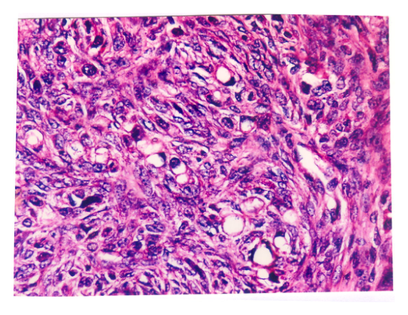

開卷有益 ／
醫師 ／ 醫學（二）（包括微生物免疫學、寄生蟲學、藥理學、病理學、公共衛生學等科目知識及其臨床之應用） ／ 111 年第 1 次111 年第 1 次醫師醫學（二）（包括微生物免疫學、寄生蟲學、藥理學、病理學、公共衛生學等科目知識及其臨床之應用）試題與答案
這一頁是民國 111 年第 1 次醫師醫學（二）（包括微生物免疫學、寄生蟲學、藥理學、病理學、公共衛生學等科目知識及其臨床之應用）的整份歷屆試題，共 100 題，題目與標準答案出自考選部「國家考試試題及測驗式試題答案」開放資料，其中 100 題附有詳解。以下逐題列出題幹、選項與答案；要計時作答或記錄成績，請用線上練習。
考選部原始場次代碼：111020
線上作答這一科 →
全部 100 題
第 1 題
下列何者不是分枝桿菌屬（Mycobacterium）細菌的特點？
（A） 細胞壁具有分枝桿菌酸（mycolic acid）（B） 生長速度較大腸桿菌緩慢（C） 可以使用抗酸性染色法（acid fast stain）染色觀察（D） 染色體G+C的比例（GC ratio）較低答案：（D）
詳解與考點 正解：本題問分枝桿菌屬不具備的特點；其基因體的 G+C 含量高，而非較低，故錯誤敘述為 D。高脂質細胞壁中的 mycolic acid 也是其抗酸性與生長緩慢的重要背景。
A：分枝桿菌細胞壁含 mycolic acid，形成富脂質的特殊細胞壁，是其典型特徵，因此不是答案。
B：分枝桿菌一般生長緩慢，較大腸桿菌需更久時間培養，敘述正確，故非答案。
C：其細胞壁的高脂質性使一般染色不易去色，故可用 acid-fast stain 觀察，敘述正確。
本題考點：分枝桿菌（Mycobacterium）的 mycolic acid 細胞壁；acid-fast stain；高 G+C 含量與相對緩慢的生長特性。
第 2 題
培養下列何種微生物只能在含氮氣的操作箱中操作，或以厭氧系統培養才可生長？
（A） 仙人掌桿菌（Bacillus cereus）（B） 破傷風桿菌（Clostridium tetani）（C） 金黃色葡萄球菌（Staphylococcus aureus）（D） 李斯特菌（Listeria monocytogenes）答案：（B）
詳解與考點 正解：只能在無氧培養系統中生長，代表專性厭氧菌（obligate anaerobe）。破傷風桿菌 Clostridium tetani 對氧敏感，培養時需以厭氧操作箱或厭氧系統排除氧氣，故選 B。
A：Bacillus cereus 為兼性厭氧菌（facultative anaerobe），可在有氧環境生長，並不只能使用厭氧培養。
C：Staphylococcus aureus 也是兼性厭氧菌，能在一般有氧培養條件生長，故不符。
D：Listeria monocytogenes 可在有氧或低氧環境生長，並非必須在嚴格厭氧條件下培養。
本題考點：氧氣需求（oxygen requirement）可區分專性厭氧菌與兼性厭氧菌；Clostridium tetani 是需嚴格避免氧氣的專性厭氧菌。
第 3 題
白喉桿菌（Corynebacterium diphtheriae）的白喉毒素的B次單元與宿主細胞接受器結合，接著A次單元進入細胞，與細胞的那一個蛋白質結合，進而抑制蛋白質合成？
（A） 核糖體（Ribosome）40S次單元（subunit）（B） 核糖體（Ribosome）60S次單元（subunit）（C） 延長因子（Elongation factor）-2（EF-2）（D） 延長因子（Elongation factor）-3（EF-3）答案：（C）
詳解與考點 正解：白喉毒素的關鍵機轉是 A 次單元進入細胞後，將延長因子 EF-2 進行 ADP-ribosylation，使 EF-2 失活而阻斷蛋白質轉譯（translation），故選 C。B 次單元負責受體結合，A 次單元負責毒性酵素作用。
A：40S 次單元是核糖體小次單元，但不是白喉毒素的直接標的；白喉毒素是藉失活 EF-2 間接使核糖體無法完成轉位。
B：60S 次單元為真核核糖體大次單元，亦非白喉毒素直接結合並修飾的蛋白質。
D：EF-3 主要見於真菌等生物的轉譯系統，並非白喉毒素在人類宿主細胞內的典型標的。
本題考點：白喉毒素（diphtheria toxin）為 A-B toxin；其 A subunit 使 elongation factor-2, EF-2 ADP-ribosylation，抑制蛋白質合成。
第 4 題
下列何種抗生素不是經由抑制細菌蛋白質生合成，達到抑制細菌生長或殺菌之作用？
（A） 卡納黴素（kanamycin）（B） 克林黴素（clindamycin）（C） 硝基甲嘧唑乙醇（metronidazole）（D） 四環素（tetracycline）答案：（C）
詳解與考點 正解：題幹問不經由抑制細菌蛋白質生合成的抗生素。metronidazole 在厭氧菌內被還原後形成具反應性的中間產物，造成 DNA 損傷並抑制核酸合成，不是作用於細菌核糖體，故選 C。
A：kanamycin 為 aminoglycoside，與 30S 核糖體次單元結合而干擾蛋白質合成，故不是答案。
B：clindamycin 與 50S 核糖體次單元結合，抑制蛋白質轉譯，符合題幹所述機轉。
D：tetracycline 與 30S 核糖體次單元結合，阻止 aminoacyl-tRNA 進入 A site，屬蛋白質生合成抑制劑。
本題考點：抗生素作用機轉（antibiotic mechanisms）；aminoglycosides、tetracyclines 作用於 30S，clindamycin 作用於 50S；metronidazole 造成 DNA damage。
第 5 題
下列何種生物細胞之細胞膜不含固醇（sterols）？
（A） 哺乳類動物（B） 結核分枝桿菌（Mycobacterium tuberculosis）（C） 肺炎黴漿菌（Mycoplasma pneumoniae）（D） 黴菌（Fungus）答案：（B）
詳解與考點 正解：細胞膜是否含 sterols。結核分枝桿菌雖有富含 mycolic acid 的細胞壁，卻不像真核細胞與 Mycoplasma 一樣在細胞膜含 sterols，故選 B。此題易把「脂質多的細胞壁」誤認為「膜含固醇」，兩者必須分開判讀。
A：哺乳類細胞膜含 cholesterol，藉此調節膜流動性，故不是答案。
C：Mycoplasma pneumoniae 缺乏細胞壁，需從宿主取得 sterols 納入細胞膜以維持膜穩定，故非答案。
D：黴菌細胞膜含 ergosterol，是多種抗黴菌藥物的重要作用標的，故不是答案。
本題考點：細胞膜固醇（membrane sterols）的生物差異；動物含 cholesterol、黴菌含 ergosterol、Mycoplasma 需外源性 sterols；mycolic acid 是分枝桿菌細胞壁成分。
第 6 題
遊走性紅斑（erythema migrans）是何種微生物感染的特殊皮膚表現？
（A） Coxiella burnetii（B） Leptospira interrogans（C） Rickettsia rickettsii（D） Borrelia burgdorferi答案：（D）
詳解與考點 正解：遊走性紅斑是萊姆病（Lyme disease）早期的代表性皮膚表現，由 Borrelia burgdorferi 感染所致，常自蜱蟲叮咬處向外擴展，故選 D。
A：Coxiella burnetii 引起 Q fever，常見表現為發燒、肺炎或肝炎，遊走性紅斑不是其典型皮膚表現。
B：Leptospira interrogans 引起鉤端螺旋體病，常與動物尿液污染水源接觸及結膜充血等相關，不以遊走性紅斑為特徵。
C：Rickettsia rickettsii 可引起落磯山斑點熱，雖會有皮疹而看似相近，但其典型斑疹與萊姆病的擴大性遊走性紅斑不同。
本題考點：萊姆病（Lyme disease）由 Borrelia burgdorferi 引起；erythema migrans 是其早期臨床線索；蜱媒感染（tick-borne infection）的皮疹鑑別。
第 7 題
下列何菌較常感染免疫缺陷的病人，會在組織上形成生物膜，具有高度抗藥性，可存活在膽鹽及高鹽環境？
（A） 肺炎鏈球菌（Streptococcus pneumoniae）（B） 化膿鏈球菌（Streptococcus pyogenes）（C） 轉糖鏈球菌（Streptococcus mutans）（D） 糞腸球菌（Enterococcus faecalis）答案：（D）
詳解與考點 正解：免疫缺陷宿主感染、組織生物膜、高度抗藥性，以及可耐受膽鹽與高鹽環境，是腸球菌（Enterococcus）特徵；其中糞腸球菌 Enterococcus faecalis 最符合，故選 D。其生物膜特性也使導管或醫療器材相關感染較難處理。
A：Streptococcus pneumoniae 主要以莢膜與肺炎、腦膜炎等相關，並不以耐膽鹽及高鹽環境存活為其鑑別特徵。
B：Streptococcus pyogenes 為 A 群鏈球菌，常致咽炎、膿痂疹或侵襲性感染，但題幹所列耐受環境與生物膜抗藥性組合不符。
C：Streptococcus mutans 與齲齒及牙菌斑生物膜有關，生物膜線索看似相近；但它不具有題幹所強調的膽鹽及高鹽耐受特徵。
本題考點：Enterococcus faecalis 的耐受性（bile and salt tolerance）；biofilm formation 與醫療照護相關感染；抗藥性（antimicrobial resistance）。
第 8 題
關於無乳鏈球菌（Streptococus agalactiae）的敘述，下列何者錯誤？
（A） 屬於A群的鏈球菌（B） 具有Christie, Atkins, Much-Petersen（CAMP）測試陽性的特性（C） 通常會無症狀的聚落生長在腸胃道或者生殖泌尿道（D） 會引起新生兒腦膜炎及肺炎答案：（A）
詳解與考點 正解：本題問無乳鏈球菌的錯誤敘述。Streptococcus agalactiae 屬 B 群鏈球菌（group B Streptococcus），不是 A 群，因此 A 錯誤，故選 A。
B：無乳鏈球菌的 CAMP test 為陽性，是實驗室鑑別特徵之一，敘述正確，故非答案。
C：其可無症狀定殖於腸胃道與生殖泌尿道，孕婦定殖與垂直傳播風險相關，敘述正確。
D：無乳鏈球菌可造成新生兒肺炎、敗血症與腦膜炎，為新生兒重要致病菌，故此敘述正確。
本題考點：B 群鏈球菌（group B Streptococcus）即 Streptococcus agalactiae；CAMP test positivity；新生兒感染與母體生殖泌尿道定殖。
第 9 題
有關嗜肺退伍軍人桿菌（Legionella pneumophila）的敘述，下列何者錯誤？
（A） 此菌於自然界可生存於阿米巴原蟲（amebae）體內（B） 此菌培養時需添加L-cysteine與iron（C） 宿主對此菌之免疫力主要藉由抗莢膜之抗體（D） 使用抗生素macrolides或fluoroquinolones治療其感染症答案：（C）
詳解與考點 正解：本題問 Legionella pneumophila 的錯誤敘述。對 Legionella 的防禦主要依賴細胞媒介免疫（cell-mediated immunity），特別是活化巨噬細胞的 T 細胞反應，而不是「抗莢膜抗體」；且 Legionella 並非以莢膜抗體為核心考點，故選 C。
A：Legionella 可在環境水源中的 amebae 內存活與複製，這也有助其在人工水系統中持續存在，敘述正確。
B：培養 Legionella 需特殊培養基並提供 L-cysteine 與 iron，屬其重要培養特性，故非答案。
D：macrolides 或 fluoroquinolones 可用於治療 Legionella 感染，敘述正確。
本題考點：Legionella pneumophila 是胞內寄生傾向病原；細胞媒介免疫（cell-mediated immunity）是重要宿主防禦；其培養需 L-cysteine 與 iron。
第 10 題
病毒感染寄主會引發免疫致病性（immunopathogenesis），下列何項因子最有可能造成第四型過敏及發炎反應（type IV hypersensitivity and inflammation）？
（A） 病毒抗體（B） 干擾素（C） 多形核白血球（polymorphonuclear leukocyte）（D） 細胞激素（cytokine）本題送分，無標準答案
詳解與考點 本題官方公告送分。
第 11 題
下列何種細胞不是愛滋病毒（HIV）主要感染的對象？
（A） CD4 T細胞（B） 嗜中性白血球（neutrophil）（C） 巨噬細胞（macrophage）（D） 樹突細胞（dendritic cells）答案：（B）
詳解與考點 正解：HIV 的「主要感染對象」。HIV 主要利用 CD4 與輔受體進入 CD4 T 細胞、巨噬細胞及樹突細胞等；嗜中性白血球不是 HIV 的主要靶細胞，故選 B。
A：CD4 T 細胞表現 CD4，是 HIV 的主要感染與破壞目標，造成細胞媒介免疫缺陷，故非答案。
C：巨噬細胞可被 HIV 感染並作為病毒儲存庫之一，敘述符合主要靶細胞概念。
D：樹突細胞可參與 HIV 的捕捉與傳遞，特定樹突細胞亞群亦可被感染，因此不是本題所問的非主要對象。
本題考點：HIV tropism 依賴 CD4 與輔受體；主要靶細胞包括 CD4 T cells、macrophages 與 dendritic cells；嗜中性白血球不是主要感染細胞。
第 12 題
新型抗流感病毒藥物紓伏效（baloxavir marboxil）抑制對象為何？
（A） PB2（B） M2（C） HA（D） NA本題送分，無標準答案
詳解與考點 本題官方公告送分。
第 13 題
有關疱疹病毒（Herpesvirus）與其相關疾病之配對，下列何者錯誤？
（A） 單純疱疹病毒一型（HSV-1）：疱疹性腦炎（herpes encephalitis）（B） EB病毒（Epstein-Barr virus）：單核球增多症（mononucleosis）（C） 水痘病毒（VZV）：帶狀疱疹（D） 人類疱疹病毒六型（HHV-6）：疱疹性咽峽炎（herpangina）答案：（D）
詳解與考點 正解：本題問配對錯誤者。疱疹性咽峽炎（herpangina）主要由 enteroviruses，常見為 Coxsackie A virus 引起，並非 HHV-6；HHV-6 典型相關疾病是幼兒玫瑰疹，故選 D。
A：HSV-1 是疱疹性腦炎的重要病因，尤其常累及顳葉，配對正確，故非答案。
B：Epstein-Barr virus 可引起傳染性單核球增多症，配對正確。
C：VZV 初次感染造成水痘，潛伏後再活化造成帶狀疱疹，敘述正確。
本題考點：Herpesviruses 的臨床配對；HHV-6 與 roseola infantum；herpangina 常由 Coxsackie A 等 enteroviruses 引起。
第 14 題
有關伊波拉病毒（Ebola virus）的敘述，下列何者錯誤？
（A） 病毒穩定，主要透過腸胃道傳染（B） 病毒可以感染內皮細胞、單核球（monocyte）和其它細胞，並快速複製，造成多種細胞壞死（C） 病毒感染細胞之後，會引起細胞激素風暴（cytokine storm）（D） 病毒感染內皮細胞之後，使細胞失去附著性，導致血管通透性增加，造成內出血答案：（A）
詳解與考點 正解：本題問伊波拉病毒的錯誤敘述。伊波拉病毒主要經由感染者血液、分泌物或其他體液的直接接觸傳播，並非「病毒穩定且主要經腸胃道傳染」，故選 A。
B：伊波拉病毒可感染內皮細胞、單核球及其他細胞並快速複製，造成廣泛細胞損傷與壞死，敘述正確，故非答案。
C：感染可引發失調的強烈發炎反應與 cytokine storm，是疾病嚴重度的重要機轉之一，敘述正確。
D：內皮細胞受損與血管通透性增加會造成血管內液體外滲及出血傾向，符合伊波拉病毒出血熱的病理生理，故非答案。
本題考點：伊波拉病毒病（Ebola virus disease）的接觸性體液傳播；內皮損傷（endothelial injury）與血管通透性增加；cytokine storm。
第 15 題
有關登革病毒（dengue virus）的敘述，下列何者正確？
（A） 無法以乙醚或氯仿去其活性（inactivate）（B） 與C型肝炎病毒同屬於黃病毒科（Flaviviridae）（C） 可以血球凝集抑制實驗，區分四種登革病毒型別（D） 臨床上已有抗登革熱藥物可供使用答案：（B）
詳解與考點 正解：登革病毒的病毒分類。登革病毒為有套膜的黃病毒科（Flaviviridae）病毒；C型肝炎病毒也歸於黃病毒科，故選 B。
A：登革病毒有脂質套膜，乙醚或氯仿可破壞套膜而使其失活；「無法」失活把有套膜病毒的性質說反了。
C：血球凝集抑制試驗可偵測抗體，但四個登革病毒血清型間存在交叉反應，不能據此可靠區分型別；它看似可用血清學檢驗分類，錯在忽略交叉反應。
D：登革熱目前以支持性治療與病況監測為主，沒有可作為標準臨床治療的特異性抗登革病毒藥物。
本題考點：黃病毒科（Flaviviridae）——登革病毒與C型肝炎病毒同屬此科；病毒套膜（viral envelope）——脂質溶劑可使有套膜病毒失活；登革病毒血清型（dengue serotype）間的血清交叉反應。
第 16 題
下列何種藥物的作用機轉為阻斷真菌微小管（microtubule）？
（A） itraconazole（B） griseofulvin（C） nystatin（D） terbinafine答案：（B）
詳解與考點 正解：「阻斷真菌微小管」。griseofulvin 會與真菌微小管結合，干擾有絲分裂紡錘體與細胞分裂，故選 B。
A：itraconazole 是唑類抗黴菌藥（azole antifungal），抑制麥角固醇合成路徑中的去甲基化酶，主要傷害細胞膜功能，不是微小管。
C：nystatin 與細胞膜麥角固醇結合並形成孔洞，使細胞內容物外漏；它看似也直接作用於真菌，但靶點是細胞膜而非微小管。
D：terbinafine 抑制角鯊烯環氧化酶（squalene epoxidase），使麥角固醇不足及角鯊烯累積，並不阻斷微小管。
本題考點：griseofulvin——干擾真菌微小管（microtubule）與有絲分裂；唑類抗黴菌藥（azole antifungal）——抑制麥角固醇（ergosterol）合成；抗黴菌藥的靶點辨識。
第 17 題
新型隱球菌（Cryptococcus neoformans）在何種培養基生長時菌落呈咖啡色，可藉以和其它不產色的酵母菌區分？
（A） buffered charcoal yeast extract agar（B） CHROMagar（C） cornmeal agar（D） niger seed agar答案：（D）
詳解與考點 正解：新型隱球菌在培養基形成咖啡色菌落。Cryptococcus neoformans 的酚氧化酶可利用 niger seed agar 的基質產生黑褐至咖啡色素，因而可與不產色酵母菌鑑別，故選 D。
A：buffered charcoal yeast extract agar 主要用於培養 Legionella 等需特殊營養的細菌，不是以隱球菌褐色色素作鑑別。
B：CHROMagar 以不同微生物代謝產生的顏色協助初步鑑別，但本題所問隱球菌特徵性的褐色反應不在此培養基。
C：cornmeal agar 常用於觀察 Candida 的厚膜孢子或菌絲形態，不能以此特徵辨識隱球菌的咖啡色菌落。
本題考點：新型隱球菌（Cryptococcus neoformans）——具酚氧化酶（phenoloxidase）並可形成黑褐色素；niger seed agar——用於以色素生成鑑別隱球菌；真菌培養鑑別。
第 18 題
對於免疫系統消滅病原體的描述何者錯誤？
（A） 自然殺手細胞（natural killer cell）可藉由抗原特異性受體直接辨識抗原並清除病毒（B） 巨噬細胞（macrophage）可以吞噬細菌並利用溶酶體（lysosome）的酵素分解細菌（C） 被活化後的補體（complement）可以結合到細菌的細胞壁上穿孔並造成細菌死亡（D） 抗體可以阻斷病毒和細胞結合的接受器來防止病毒對細胞的感染答案：（A）
詳解與考點 正解：題目問錯誤敘述，關鍵在自然殺手細胞並沒有抗原特異性受體。自然殺手細胞（natural killer cell, NK cell）靠活化與抑制受體整合訊號，尤其辨識目標細胞的 MHC class I 降低或壓力訊號，並非以抗原特異性受體直接辨識抗原，故選 A。
B：巨噬細胞可吞噬細菌，並在吞噬溶酶體內以酵素及其他殺菌機制分解病原體，敘述正確，故非答案。
C：補體活化後可沉積於細菌表面；末端補體複合體可在易感細菌膜上形成孔洞並致死，敘述正確，故非答案。
D：中和抗體可阻止病毒與宿主細胞受體結合，因而防止入侵感染，敘述正確，故非答案。
本題考點：自然殺手細胞（NK cell）——屬先天免疫，不用重組的抗原特異性受體；MHC class I 缺失辨識（missing-self recognition）；補體（complement）與抗體中和（neutralization）。
第 19 題
濾泡輔助性T細胞（T follicular helper cells, TFH cells）主要分泌的細胞素為何？
（A） IL-21（B） IL-22（C） IL-23（D） IL-27答案：（A）
詳解與考點 正解：濾泡輔助性 T 細胞（T follicular helper cell, TFH cell）對生發中心 B 細胞的協助功能。TFH 細胞以 IL-21 為重要細胞激素，促進 B 細胞增殖、親和力成熟與抗體類別轉換，故選 A。
B：IL-22 主要由 Th17、Th22 等細胞產生，作用於上皮屏障與組織修復，並非 TFH 的代表性分泌物。
C：IL-23 主要由抗原呈現細胞產生以維持或擴增 Th17 反應，不是 TFH 主要分泌的細胞素。
D：IL-27 多由髓系抗原呈現細胞產生，參與 T 細胞反應調節，與 TFH 對 B 細胞的典型輔助訊號不符。
本題考點：濾泡輔助性 T 細胞（TFH cell）——在生發中心（germinal center）協助 B 細胞；IL-21——TFH 的重要細胞激素；抗體親和力成熟（affinity maturation）。
第 20 題
腫瘤免疫學是研究免疫系統和癌細胞之間的交互作用，希望發現可以用來發展治療癌症的新療法。關於免疫系統和腫瘤的互動，下列那個敘述最不適當？
（A） 健康人體內腫瘤細胞形成時通常可以被T細胞和自然殺手細胞辨識之後清除（B） 傳統治療方法中有單株抗體藥物，例如rituximab或trastuzumab（Herceptin）在體內結合到癌細胞後，可以啟動補體活化或是ADCC（antibody-dependent cell-mediated cytotoxicity）來清除腫瘤細胞（C） chimeric antigen receptor (CAR)-T 療法是取出健康人的T細胞，培養並改造這些T細胞使其表現專一性對抗腫瘤的CARs，再打回癌症病人來攻擊清除腫瘤細胞（D） checkpoint blockade 療法是要干擾在T細胞上的抑制受體，利用anti-CTLA-4或 anti-PD-1抗體來喚醒免疫系統的T細胞攻擊腫瘤答案：（C）
詳解與考點 正解：題目問最不適當，關鍵是 CAR-T 細胞來源。臨床 CAR-T 療法通常取自癌症病人自身的 T 細胞，經改造擴增後回輸；選項稱取出「健康人」T 細胞再打回病人，錯置了標準自體細胞來源，故選 C。
A：免疫監視（immune surveillance）中，T 細胞與自然殺手細胞可辨識並清除部分新生腫瘤細胞，敘述為合理的基本概念，故非答案。
B：rituximab、trastuzumab 等治療性單株抗體與腫瘤細胞標的結合後，可透過補體或抗體依賴性細胞媒介細胞毒殺作用（ADCC）參與清除，敘述適當。
D：anti-CTLA-4、anti-PD-1 等免疫檢查點抑制劑解除 T 細胞抑制訊號，增強抗腫瘤反應，敘述適當。
本題考點：嵌合抗原受體 T 細胞（CAR-T cell）治療——通常採病人自體 T 細胞；免疫檢查點阻斷（checkpoint blockade）——解除 CTLA-4 或 PD-1 抑制；抗體依賴性細胞媒介細胞毒殺作用（ADCC）。
第 21 題
腫瘤細胞會表現下列何種分子以抑制宿主免疫反應？
（A） CD28（B） PD-L1（C） PD-1（D） CTLA-4答案：（B）
詳解與考點 正解：腫瘤細胞表現、用來抑制宿主 T 細胞反應的分子。腫瘤細胞可表現 PD-L1，與 T 細胞上的 PD-1 結合後傳遞抑制訊號，使 T 細胞功能下降，故選 B。
A：CD28 是 T 細胞上的共刺激受體，與抗原呈現細胞的 B7 分子結合可促進 T 細胞活化，不是腫瘤細胞典型用來免疫逃脫的配體。
C：PD-1 是 T 細胞常見的抑制性受體，不是腫瘤細胞藉以結合 T 細胞的主要分子；它看似同屬 PD-1 軸，錯在受體與配體的細胞來源相反。
D：CTLA-4 是活化 T 細胞及調節性 T 細胞上的抑制性受體，主要競爭 B7 共刺激訊號，並非腫瘤細胞表現的 PD-1 配體。
本題考點：PD-1/PD-L1 軸（PD-1/PD-L1 axis）——PD-L1 抑制 T 細胞反應；腫瘤免疫逃脫（tumor immune evasion）；T 細胞共刺激與檢查點（T-cell costimulation and checkpoint）。
第 22 題
調理作用（opsonization）產生原因之一是因為吞噬細胞（phagocytic cell）表面上具有下列何種受體，以辨識附著於病菌上的調理素（opsonin）？
（A） Toll-like receptors（B） complement receptors（C） lectin-like receptors（D） chemokine receptors答案：（B）
詳解與考點 正解：吞噬細胞辨識附著在病菌上的調理素。補體片段如 C3b 可作為調理素，吞噬細胞表面的補體受體（complement receptor）與其結合後，可顯著增加吞噬效率，故選 B。
A：Toll-like receptor 是模式辨識受體，直接辨識病原相關分子模式，並非主要辨識附著於病菌上的補體調理素。
C：lectin-like receptor 可辨識特定醣類結構，屬先天免疫辨識的一環，但不是本題調理素結合的典型受體。
D：chemokine receptor 主要感受趨化激素濃度梯度以導引細胞遷移，不負責辨識病原表面的調理素。
本題考點：調理作用（opsonization）——以抗體或補體包被病原體以利吞噬；補體受體（complement receptor）——辨識 C3b 等補體調理素；吞噬作用（phagocytosis）。
第 23 題
共濟失調微血管擴張症候群（ataxia-telangiectasia）會出現免疫系統異常，導致B細胞與 T細胞數量減少。主要因為下列何種機轉所致？
（A） V(D)J重組過程出現缺陷（B） 無法產生IgM抗體（C） MHC class I辨識產生缺陷（D） MHC class II辨識產生缺陷答案：（A）
詳解與考點 正解：共濟失調微血管擴張症候群同時有 B、T 細胞數量減少。此病與 ATM 基因缺陷相關，造成 DNA 雙股斷裂修復異常；淋巴球發育所需的 V(D)J 重組無法順利完成，故選 A。
B：IgM 產生異常只能解釋體液免疫的一部分，不能解釋 B、T 細胞發育均受影響及本病的 DNA 修復缺陷。
C：MHC class I 辨識缺陷主要影響 CD8 T 細胞對內源性抗原的辨識，不是造成 B、T 細胞數量共同減少的主要機轉。
D：MHC class II 辨識缺陷會妨礙 CD4 T 細胞協助反應，但無法解釋本題的核心 DNA 重組與廣泛淋巴球發育問題。
本題考點：共濟失調微血管擴張症候群（ataxia-telangiectasia）——ATM 缺陷與 DNA 損傷反應異常；V(D)J 重組（V(D)J recombination）——淋巴球抗原受體形成所必需；原發性免疫缺乏症（primary immunodeficiency）。
第 24 題
B細胞抗原接受器的基因重組（gene rearrangement）對B細胞早期發育十分重要，有關B細胞抗原接受器也就是免疫球蛋白（immunoglobulin）的基因重組，下列敘述何者錯誤？
（A） 免疫球蛋白基因重組是發生在B細胞發育的早期，而且先從重鏈基因的D和J片段開始重組，接著才是V-DJ的片段重組（B） 免疫球蛋白基因的輕鏈先從κ輕鏈基因做V及J片段的重組，如果兩個染色體都重組失敗才會做λ輕鏈基因的重組（C） VDJ或VJ片段重組的交接位置所做出來的蛋白剛好就是在重鏈或輕鏈CDR1、CDR2及CDR3的位置，因此這三個區域的胺基酸序列的歧異度最大，也是抗原的結合位（D） 當第一條染色體的免疫球蛋白基因的重鏈或輕鏈基因完成重組後，第二條染色體的免疫球蛋白基因就停止重組，因此一個B細胞只會表現一種抗原受體，這種機制稱為對偶基因排除現象（allelic exclusion）答案：（C）
詳解與考點 正解：題目問錯誤敘述，關鍵是 V(D)J 接合處形成哪一個 CDR。重鏈 V-DJ 或輕鏈 V-J 的接合處主要形成 CDR3；CDR1、CDR2 位於 V 基因片段內，並非由接合處做出。因此選項稱接合處同時形成 CDR1、CDR2、CDR3 是錯的，故選 C。
A：重鏈重組先進行 D-J，再進行 V-DJ，發生於 B 細胞早期發育，敘述正確，故非答案。
B：輕鏈通常先嘗試 κ 鏈 V-J 重組，若兩個 κ 等位基因皆未成功，才可嘗試 λ 鏈重組，敘述正確，故非答案。
D：成功重組一條重鏈或輕鏈後會抑制另一等位基因繼續重組，形成對偶基因排除（allelic exclusion），使一個 B 細胞維持單一抗原受體特異性，敘述正確。
本題考點：V(D)J 重組（V(D)J recombination）——重鏈先 D-J 後 V-DJ；互補決定區（complementarity-determining region, CDR）——CDR3 由接合處產生最大多樣性；對偶基因排除（allelic exclusion）。
第 25 題
成熟的CD4 T細胞活化後，不同轉錄因子可調控細胞分化為不同的effector T細胞，不同effector T細胞可以產出特定的細胞激素，下列轉錄因子和細胞激素的配對，那一組相關性最低？
（A） GATA3：IL-4（B） Foxp3：TGF-β（C） RORγT：IL-12（D） T-bet：IFN-γ答案：（C）
詳解與考點 正解：輔助型 T 細胞分化的轉錄因子與效應細胞激素配對。RORγT 驅動 Th17 分化，其代表性細胞激素為 IL-17、IL-22 等；IL-12 則主要由抗原呈現細胞產生並促進 Th1 反應，兩者相關性最低，故選 C。
A：GATA3 是 Th2 分化的重要轉錄因子，Th2 細胞分泌 IL-4、IL-5、IL-13，與 IL-4 的配對正確。
B：Foxp3 是調節性 T 細胞（Treg）的關鍵轉錄因子，Treg 可藉 TGF-β 等抑制性訊號調節免疫反應，配對合理。
D：T-bet 是 Th1 分化的關鍵轉錄因子，Th1 細胞的代表性細胞激素為 IFN-γ，配對正確。
本題考點：Th17 細胞（Th17 cell）——RORγT 與 IL-17；Th1 細胞（Th1 cell）——T-bet 與 IFN-γ，受 IL-12 驅動；輔助型 T 細胞分化（helper T-cell differentiation）。
第 26 題
2018年諾貝爾醫學獎得主Tasuku Honjo因為發現PD-1分子而獲獎，他另外一個著名的發現是AID（activation-induced cytidine deaminase）分子，下列有關AID的敘述何者錯誤？
（A） AID在germinal center B細胞表現量高，可促進somatic hypermutation（B） B細胞所產生的抗體轉換為IgE時，也是由AID分子調控（C） class switch recombination（CSR）起因為AID將cytosine轉變成uridine，之後的DNA修復過程產生DNA雙股斷裂，最後造成DNA重組（D） class switch recombination由特定的DNA序列recombination signal sequence（RSS）所主導，造成抗體重鏈的固定區（constant region of heavy chain）從IgM轉換成其他類型答案：（D）
詳解與考點 正解：題目問錯誤敘述，關鍵是抗體類別轉換的 DNA 標記。AID 在 switch region 將 cytosine 去胺化為 uridine，引發 DNA 修復與重組；RSS 是 V(D)J 重組由 RAG 蛋白辨識的序列，不主導 class switch recombination，故選 D。
A：AID 在生發中心 B 細胞中高度表現，促進體細胞高突變（somatic hypermutation），敘述正確，故非答案。
B：由 IgM 轉換為 IgE 屬抗體類別轉換（class switch recombination），需要 AID 參與，敘述正確。
C：AID 將 cytosine 轉為 uridine，後續 DNA 修復可造成雙股斷裂並完成類別轉換重組，敘述正確。
本題考點：活化誘導胞嘧啶去胺酶（activation-induced cytidine deaminase, AID）——促進體細胞高突變與類別轉換；抗體類別轉換（class switch recombination, CSR）；重組訊號序列（recombination signal sequence, RSS）——屬 V(D)J 重組。
第 27 題
小明每年到了秋冬交換之際總會罹患流行性感冒，他很納悶去年才得到流感，為何今年又再感染，下列何者是最有可能的原因或情況？
（A） 流感病毒可能潛伏在神經節裡面，每當冬天來臨時，因為免疫力的降低使得流感病毒從神經節中出來感染肺部細胞（B） 流感病毒是RNA病毒，當病毒複製時會產生點突變，即便同型流感病毒，也會因為點突變造成抗原轉移（antigenic shift）使免疫系統無法完全辨認，讓病毒有機可乘（C） 小明受流感病毒感染後所產生的抗原原罪（original antigenic sin）現象，造成抗體負回饋調控免疫反應，讓B細胞無法做新的抗體去對付已經變種的流感病毒，因此再度感染（D） 只要小明每年施打流感疫苗就可以完全不會罹患流行性感冒答案：（C）
詳解與考點 正解：官方答案為 C；流感病毒逐年再感染的主要原因是點突變造成抗原漂移（antigenic drift），而非（B）所稱的抗原轉移（antigenic shift）。（C）可取之處在於抗原原罪會優先召回既有記憶 B 細胞，使對變異株新表位的 de novo 抗體反應相對受抑制；但「無法做新的抗體」過度絕對
A：潛伏於神經節、日後再活化是疱疹病毒的典型機制；流感病毒不以神經節潛伏再活化來解釋年度流行。
B：RNA 病毒複製點突變確會造成抗原改變，因而看似最接近正解；但點突變造成的是抗原漂移（antigenic drift），不是不同病毒基因片段重組造成的抗原轉移（antigenic shift），故不能選。
D：每年接種流感疫苗可降低感染與重症風險，但疫苗效果受病毒株匹配與宿主免疫反應影響，不能保證完全不感染。
本題考點：抗原漂移（antigenic drift）——點突變造成流感抗原逐步改變；抗原轉移（antigenic shift）——基因片段重組造成較大抗原變化；抗原原罪（original antigenic sin）——既有免疫記憶可偏向後續反應。
第 28 題
T細胞與B細胞都參與氣喘或是異位性皮膚炎等過敏性疾病的病理機制，此類病人體內最常檢測到：
（A） 高比例可分泌IL-5的T細胞與血清中高濃度IgA（B） 高比例可分泌IL-5的T細胞與血清中高濃度IgE（C） 高比例可分泌IFN-γ的T細胞與血清中高濃度IgA（D） 高比例可分泌IFN-γ的T細胞與血清中高濃度IgE答案：（B）
詳解與考點 正解：氣喘與異位性皮膚炎的過敏性發炎。此類疾病以 Th2 型免疫反應為主，Th2 細胞可分泌 IL-5 促進嗜酸性球反應，並透過 IL-4、IL-13 等訊號促進 IgE 類別轉換，因此最符合高 IL-5 T 細胞及高 IgE，故選 B。
A：IL-5 的方向符合 Th2 反應，但過敏性疾病典型升高的是 IgE 而非 IgA，故配對不完整。
C：IFN-γ 是 Th1 反應的代表性細胞激素，IgA 也不是典型異位性疾病的主要血清免疫球蛋白，兩者均不符。
D：IgE 升高容易使人想到過敏，但 IFN-γ 屬 Th1 而非主導異位性疾病的 Th2 細胞激素，因此是混搭的誘答。
本題考點：第二型免疫反應（type 2 immunity）——Th2 細胞與 IL-4、IL-5、IL-13；免疫球蛋白 E（IgE）——參與立即型過敏反應；嗜酸性球（eosinophil）活化。
第 29 題
林先生之前到中國旅遊時吃了淡水魚的生魚片，不久後出現腹痛，回國後眼眶附近浮腫，很幸運的在浮腫部位摘除將近4 mm大小的蟲體，林先生最有可能感染下列何種寄生蟲？
（A） 蟠尾絲蟲（Onchocerca volvulus）（B） 有棘頜口線蟲（Gnathostoma spinigerum）（C） 東方眼蟲（Thelazia callipaeda）（D） 麥地那線蟲 （Dracunculus medinensis）答案：（B）
詳解與考點 正解：食用淡水魚生食後腹痛，加上幼蟲移行至眼眶附近並可摘除約 4 mm 蟲體。有棘頜口線蟲幼蟲可經生食淡水魚感染，在人體造成幼蟲移行症與局部腫脹，累及皮下或眼部，故選 B。
A：蟠尾絲蟲經黑蠅叮咬傳播，典型為皮下結節、皮膚病變與眼病，不與淡水魚生食相關。
C：東方眼蟲由果蠅類媒介傳播，主要寄生於結膜囊或淚道；雖可造成眼部症狀，但不能解釋生食淡水魚後的腹痛與皮下移行。
D：麥地那線蟲由飲用含感染性橈足類的水傳播，成熟雌蟲多自下肢皮膚潰瘍逸出，與本題暴露史及眼眶蟲體不符。
本題考點：有棘頜口線蟲（Gnathostoma spinigerum）——生食淡水魚可感染；幼蟲移行症（larva migrans）——造成移動性皮下腫脹與眼部侵犯；食源性寄生蟲病（food-borne parasitosis）。
第 30 題
有關鞭蟲（Trichuris trichiura）感染人體的敘述，下列何者錯誤？
（A） 幼蟲直接在腸道發育為成蟲（B） 成蟲主要寄生在大腸（C） 會引起自體感染（autoinfection）（D） 幼童重度感染可能會引起脫肛（rectum prolapse）答案：（C）
詳解與考點 正解：題目問錯誤敘述，關鍵是鞭蟲的生活史。鞭蟲卵需先在外界土壤發育成感染性蟲卵，人體吞入後幼蟲在腸內發育；它不會在宿主內反覆形成感染性卵造成自體感染，故選 C。
A：人吞入感染性蟲卵後，幼蟲在腸道孵化並發育為成蟲，敘述正確，故非答案。
B：鞭蟲成蟲主要寄生於盲腸及大腸，敘述正確，故非答案。
D：幼童重度感染可因腸道病變與用力排便造成直腸脫垂，為鞭蟲病的典型嚴重表現之一，敘述正確。
本題考點：鞭蟲（Trichuris trichiura）——經土壤中發育的蟲卵感染；土傳蠕蟲（soil-transmitted helminth）；直腸脫垂（rectal prolapse）——重度小兒鞭蟲感染的表現。
第 31 題
詹先生近年來因愛好生態攝影而經常前往北歐之瑞典及芬蘭等國旅遊，期間曾多次品嚐當地之醃魚特產，日前因腹部不適及出現貧血病症而就醫，經醫院檢查發現有嚴重維他命B12缺乏，並於其空腸（jejunum）近端發現有帶狀蟲體寄生。依據以上敘述，詹先生最可能感染何種寄生蟲？
（A） 中華肝吸蟲（Clonorchis sinensis）（B） 橫川吸蟲（Metagonimus yokogawai）（C） 廣節裂頭絛蟲（Diphyllobothrium latum）（D） 增生性裂頭幼蟲（Sparganum proliferum）答案：（C）
詳解與考點 正解：北歐醃魚、近端空腸帶狀蟲體與嚴重維他命 B12 缺乏。廣節裂頭絛蟲可經生食或未熟淡水魚感染，成蟲寄生小腸並競爭維他命 B12，造成巨球性貧血，故選 C。
A：中華肝吸蟲主要寄生膽道，可造成膽管炎或膽道病變，與空腸絛蟲及 B12 缺乏不符。
B：橫川吸蟲是小腸吸蟲，可由淡水魚感染並引起腸胃不適，但不是帶狀長蟲體，也不是 B12 缺乏的典型原因。
D：增生性裂頭幼蟲是裂頭絛蟲的幼蟲型，可在皮下等組織造成腫塊，非小腸成蟲寄生與 B12 消耗的型態。
本題考點：廣節裂頭絛蟲（Diphyllobothrium latum）——生食淡水魚感染；維他命 B12 缺乏（vitamin B12 deficiency）與巨球性貧血；絛蟲成蟲的小腸寄生。
第 32 題
人類感染下列何種寄生蟲，最常造成神經性囊尾幼蟲症（neurocysticercosis）？
（A） 旋毛蟲（Trichinella spiralis）（B） 牛肉絛蟲（Taenia saginata）（C） 豬肉絛蟲（Taenia solium）（D） 亞洲無鈎絛蟲（Taenia saginata asiatica）答案：（C）
詳解與考點 正解：神經性囊尾幼蟲症。人吞入豬肉絛蟲的蟲卵後，幼蟲可穿過腸壁並散布至中樞神經系統，形成囊尾幼蟲，最常造成神經性囊尾幼蟲症，故選 C。
A：旋毛蟲由未熟肉品的幼蟲感染，幼蟲主要寄生橫紋肌造成肌痛與嗜酸性球增多，不形成腦內囊尾幼蟲。
B：牛肉絛蟲主要造成腸道成蟲感染，通常不會因其蟲卵形成典型的人類囊尾幼蟲症。
D：亞洲無鈎絛蟲與豬肉絛蟲不同，主要造成腸道絛蟲感染，並非神經性囊尾幼蟲症的主要病原。
本題考點：豬肉絛蟲（Taenia solium）——蟲卵可造成囊尾幼蟲症；神經性囊尾幼蟲症（neurocysticercosis）——幼蟲散布至中樞神經系統；絛蟲感染（taeniasis）與囊尾幼蟲症（cysticercosis）的區別。
第 33 題
下列何者為瘧疾（malaria）患者發燒週期之最可能原因？
（A） 瘧原蟲入侵紅血球內，因為產生裂殖子（merozoite）而自紅血球內排出代謝產物所致（B） 除惡性瘧原蟲（Plasmodium falciparum）外，原蟲感染的細胞狀態是同步，所以發燒會呈現週期且有規律性（C） 間日瘧原蟲（P. vivax）感染之發燒週期一般為48小時，可能因不同次族群（sub-population）感染，造成不規則的發燒週期（D） 相較於惡性瘧原蟲（Plasmodium falciparum），三日瘧原蟲（P. malariae）的潛伏期較間日瘧原蟲（P.vivax）為短答案：（C）
詳解與考點 正解：間日瘧的典型 48 小時發燒週期與不規則發燒的原因。間日瘧原蟲（P. vivax）的紅血球裂殖週期約為 48 小時；若不同次族群的感染時相不同，紅血球破裂不會同步，發燒便可呈現不規則，故選 C。
A：紅血球內裂殖與破裂確會釋出物質並引發發燒，但此敘述只描述發燒發生，未說明週期性最關鍵的同步裂殖。
B：規律週期來自同一寄生蟲族群紅血球期發育同步；惡性瘧較常不同步而不規則，但其他瘧原蟲也不會一概都完全同步，敘述過度概括。
D：三日瘧原蟲的紅血球期週期較長，且其潛伏期並非必然比間日瘧短，無法解釋發燒週期。
本題考點：瘧疾週期熱（malarial paroxysm）——與紅血球裂殖同步破裂相關；間日瘧原蟲（Plasmodium vivax）——典型 48 小時週期；寄生蟲族群同步性（synchrony）。
第 34 題
下列何種病症通常與杜氏利什曼原蟲（Leishmania donovani）之感染無關？
（A） 腹瀉（diarrhea）（B） 貧血（anemia）（C） 黑水熱（blackwater fever）（D） 肝脾腫大（hepatosplenomegaly）答案：（C）
詳解與考點 正解：題目問通常與杜氏利什曼原蟲感染無關的病症。杜氏利什曼原蟲造成內臟利什曼病，可見長期發燒、肝脾腫大、貧血與其他血球低下；黑水熱是嚴重瘧疾的大量血管內溶血表現，不是其典型表現，故選 C。
A：內臟利什曼病的症狀可包括腹部不適或腹瀉，雖非最具鑑別力，仍可能出現，故非答案。
B：骨髓受侵犯、脾臟腫大與慢性發炎可造成貧血，為內臟利什曼病的常見表現，故非答案。
D：肝脾腫大是內臟利什曼病的重要臨床線索，尤其脾腫大常很明顯，敘述正確。
本題考點：杜氏利什曼原蟲（Leishmania donovani）——造成內臟利什曼病（visceral leishmaniasis）；肝脾腫大（hepatosplenomegaly）與全血球低下；黑水熱（blackwater fever）——嚴重瘧疾相關血管內溶血。
第 35 題
下列有關鼠蚤（Xenopsylla cheopis）傳播之鼠疫（plague）敘述，何者錯誤？
（A） 人類感染初期會呈現腋窩（axilla）腫大之腺鼠疫（bubonic plague）（B） 人類感染後期呈現人傳播人之肺鼠疫（pneumonic plague）（C） 感染性鼠蚤藉由嘔吐作用（vomiting）污染叮咬傷口而感染人類（D） 主要致病原為鼠疫桿菌（Yersinia pestis），屬於格蘭氏陰性菌答案：（C）
詳解與考點 正解：鼠蚤傳播鼠疫的感染方式。鼠蚤吸食帶菌鼠血後，鼠疫桿菌可在其前胃形成阻塞；蚤再叮咬人時，會因吸血受阻而反芻，將含菌物質從口器排入叮咬處。這是前胃阻塞與反芻（regurgitation）機轉，不是以嘔吐（vomiting）污染傷口，故錯誤的是 C。
A：腺鼠疫（bubonic plague）的典型表現是引流區域淋巴結疼痛性腫大；若感染由上肢附近叮咬進入，腋窩淋巴結可腫大，敘述合理，故非答案。
B：肺鼠疫（pneumonic plague）可由原發肺部感染或腺鼠疫敗血性擴散而來，含菌飛沫能造成人人傳播，是公共衛生上特別需警覺的型態，故非答案。
D：鼠疫的病原為鼠疫桿菌（Yersinia pestis），屬革蘭氏陰性球桿菌（Gram-negative coccobacillus），敘述正確，故非答案。
本題考點：鼠疫（plague）的媒介傳播——鼠蚤前胃阻塞後反芻含菌物質至叮咬處；腺鼠疫（bubonic plague）以區域淋巴結腫大為主；肺鼠疫（pneumonic plague）可經飛沫人傳人。
第 36 題
如果要在顯著水準為α的情況下，利用變異數分析來檢定三組資料，下列何者最恰當？
（A） 必須假設三組資料來源的三個母體的變異數皆相等（B） 如果要利用兩兩比較的t檢定來代替變異數分析，必須將每個t檢定的顯著水準改成α/6（C） 此變異數分析的檢定統計量會服從t分配（D） 此變異數分析也可利用迴歸分析來取代，只要加入一個解釋變數，定義數值1、2、3代表三組，再檢定該解釋變數是否顯著即可答案：（A）
詳解與考點 正解：以單因子變異數分析（one-way analysis of variance, ANOVA）比較三組平均數。傳統 ANOVA 的誤差項以各組共同的組內變異估計，因此通常假設各母體變異數相等，另也要求觀測值獨立且各組殘差近似常態。三組等變異是此方法的核心模型假設，故選 A。
B：三組兩兩比較共有 3 組，而非 6 組；若以 Bonferroni 法控制整體第一類錯誤，雙尾 t 檢定的每次檢定顯著水準可設為 α/3。此選項把雙尾檢定的兩個尾端另算成比較次數，故不恰當。
C：ANOVA 的檢定統計量為組間均方除以組內均方，於虛無假設下服從 F 分配（F distribution），不是 t 分配；兩組平均數比較時 F 與 t 平方才有對應關係。
D：以 1、2、3 當作單一連續解釋變數，會額外假設三組間有線性等距趨勢，不能一般性地取代三組 ANOVA。正確的迴歸等價作法應以組別虛擬變數（dummy variables）表示，故此敘述錯在編碼方式。
本題考點：單因子變異數分析（one-way ANOVA）——比較多組平均數時，傳統模型假設獨立、殘差近似常態及變異數同質性（homogeneity of variance）；其檢定統計量服從 F distribution。
第 37 題
下列有關簡單線性迴歸（simple linear regression）分析中，依變項（dependent variable）Y與自變項（independent variable）X的敘述，何者最不恰當？
（A） 探討的是X與Y之間是否有線性關係（B） 依變項Y通常為常態分布（C） 結果可以說明X與Y之間的線性因果關係（D） 只處理單一個自變項答案：（C）
詳解與考點 正解：簡單線性迴歸能描述關聯，卻不能單憑模型輸出證明因果。迴歸係數可量化 X 與 Y 的線性關係，但混雜因子、反向因果及選擇偏差都可能產生關聯；除非研究設計與因果假設另有支持，不能將結果直接說成線性因果關係，故最不恰當的是 C。
A：簡單線性迴歸以一個自變項 X 建立 Y 對 X 的線性平均趨勢，確實用來檢驗與描述兩者是否有線性關係，故非答案。
B：傳統線性迴歸較精確的常態假設是給定 X 後的誤差或 Y 的條件分布近似常態，而不是 Y 的邊際分布必然常態；不過此選項以「通常」描述常見模型前提，仍較 C 的因果宣稱恰當。
D：簡單線性迴歸（simple linear regression）依定義只納入單一自變項；若同時處理多個自變項，則為多元線性迴歸（multiple linear regression），故非答案。
本題考點：簡單線性迴歸（simple linear regression）——描述一個自變項與依變項的線性關聯；殘差常態性（normality of residuals）是推論假設之一；統計關聯（association）本身不等於因果關係（causation）。
第 38 題
研究發現女性體脂率越高則乳癌風險越高，此發現較符合因果關係判斷的那一個條件？
（A） 相關特異性（specificity）（B） 因果時序性（temporality）（C） 劑量效應（dose-response effect）（D） 生物學贊同性（biologic plausibility）答案：（C）
詳解與考點 正解：「體脂率越高，乳癌風險越高」呈現暴露量增加伴隨疾病風險遞增。這正是因果推論中劑量效應（dose-response effect），亦稱生物梯度（biological gradient）：暴露程度越高，結果發生機率或風險越高，故選 C。
A：相關特異性（specificity）是某暴露主要導致某特定疾病，或某疾病主要由特定暴露造成的關係；本題描述的是暴露量與風險的梯度，並未強調一對一的專一性。
B：因果時序性（temporality）要求暴露先於疾病發生，是判定因果的必要條件；本題沒有交代體脂率測量與乳癌發生的先後順序，不能由「越高越高」推得時序性。
D：生物學贊同性（biologic plausibility）是指觀察到的關聯有可理解的生物機轉支持；體脂率與乳癌可能有生物學解釋，但題幹直接呈現的是風險隨量變化，不是機轉證據。
本題考點：Bradford Hill 因果觀點（Bradford Hill considerations）——劑量效應（dose-response effect）指暴露增加伴隨風險遞增；時序性（temporality）要求暴露先於結果；生物學贊同性（biologic plausibility）則是機轉合理性。
第 39 題
某新興傳染病爆發後，受感染的重症患者會有嚴重肺炎、肺部纖維化甚至死亡的危險性。某郵輪的其中一位旅客發現受感染時，所有船上3,711位旅客和船員，全部皆進行船隻隔離檢疫，在屆滿14天隔離期後有621人確診，621人中重症者24人、死亡者2人。此一傳染病的病例致死率（case-fatality）為何？
（A） 2/24（B） 2/621（C） 2/3711（D） 2/(621-2)答案：（B）
詳解與考點 正解：病例致死率（case-fatality rate）的分母只計入確診病例。確診者共有 621 人，其中死亡 2 人，因此病例致死率＝死亡病例數／確診病例數＝2/621，故選 B。
A：2/24 的分母是重症患者數，計算的是重症患者中的死亡比例，而不是全部確診病例的病例致死率。
C：2/3711 的分母是全船接受隔離檢疫者，包含未確診者，較接近在此特定暴露人群中計算死亡風險，並非病例致死率。它看似納入全體人數較完整，卻混入了非病例。
D：2／（621-2）把死亡者從確診病例分母中移除，會使比例失真；死亡者本身也是已確診病例，應保留在病例總數內。
本題考點：病例致死率（case-fatality rate）——以特定疾病死亡數除以同一疾病的全部確診病例數；須與重症致死比例及以全體暴露人口為分母的死亡風險區分。
第 40 題
全球暖化與氣候變遷對臺灣公共衛生造成的衝擊，下列敘述何者最不恰當？
（A） 可能改變病媒及病原微生物的地區生存與繁殖（B） 在較高的氣溫下，二次空氣污染物的濃度不會增加，但大氣中的化學反應可能加速（C） 可能改變降雨量及其分布（D） 二次空氣污染物濃度的升高，可能會增加呼吸道及心血管疾病的住院風險答案：（B）
詳解與考點 正解：高溫會促進許多大氣光化學反應，因而可能提高臭氧等二次空氣污染物濃度。選項 B 前半句稱二次污染物濃度「不會增加」，與氣候變遷下高溫促進反應、增加污染事件的機制矛盾；後半句反而承認化學反應可能加速，故為最不恰當，選 B。
A：溫度、降雨與濕度改變可影響病媒與病原的存活、繁殖及地理分布，進而改變傳染病風險，敘述恰當。
C：氣候變遷可改變降雨總量、季節性及降雨分布，並造成乾旱或極端降雨等健康衝擊，敘述恰當。
D：二次空氣污染物升高，尤其臭氧與細懸浮微粒相關污染，可能加重呼吸道與心血管疾病並增加就醫或住院風險，敘述恰當。
本題考點：氣候變遷與健康（climate change and health）——高溫可促進光化學反應與二次空氣污染物（secondary air pollutants）形成；降雨與病媒生態改變會影響傳染病及慢性病健康風險。
第 41 題
有關UV-A、UV-B、UV-C三種室外紫外光的敘述，下列何者最不恰當？
（A） UV-C能量最大，所以對地表生物傷害最大（B） UV-A的波長最長（C） 過度暴露於UV-B會增加皮膚癌發生的機會（D） 平流層臭氧稀薄會導致更多紫外光進入對流層，造成對流層臭氧濃度增加答案：（A）
詳解與考點 正解：「室外、地表」紫外光的實際暴露。UV-C 雖波長最短、單一光子能量最高，但大多被平流層臭氧與氧氣吸收，通常無法大量到達地表；因此不能說它對地表生物傷害最大，最不恰當的是 A。
B：在 UV-A、UV-B、UV-C 中，UV-A 的波長最長、能量最低，敘述正確，故非答案。
C：UV-B 可造成 DNA 損傷，長期或過度暴露會增加皮膚癌風險，敘述正確，故非答案。
D：平流層臭氧減少會使更多紫外線進入對流層；紫外線可驅動對流層中的光化學反應並促成臭氧生成，故此敘述在題目所述機制下可成立，非答案。
本題考點：紫外線（ultraviolet radiation）——UV-A 波長最長，UV-C 能量最高但多被大氣吸收；UV-B 暴露與皮膚癌（skin cancer）風險上升相關；平流層臭氧（stratospheric ozone）可屏蔽紫外線。
第 42 題
職業環境中毒性物質進入人體的途徑，下列何者較不常見？
（A） 呼吸（inhalation）（B） 皮膚吸收（skin absorption）（C） 食入攝取（ingestion）（D） 滲入（infiltration）答案：（D）
詳解與考點 正解：職業毒物「進入人體」的暴露途徑。常見途徑為吸入、皮膚吸收及因手口接觸或污染食物造成的食入；滲入（infiltration）不是職業衛生中用來描述毒物進入人體的標準暴露途徑，故較不常見的是 D。
A：作業場所的氣體、蒸氣、粉塵與氣膠可經呼吸道吸入，是許多職業毒物最重要的暴露途徑，故非答案。
B：部分化學物可穿透皮膚進入全身循環，尤其在接觸溶劑、農藥或腐蝕性物質時須防範皮膚吸收，故非答案。
C：手部污染後進食、抽菸或接觸口鼻，可使毒物經腸胃道攝入；雖相較吸入常較少見，仍是公認的暴露途徑，故非答案。
本題考點：職業暴露途徑（routes of occupational exposure）——吸入（inhalation）、皮膚吸收（skin absorption）及食入（ingestion）是主要途徑；職業衛生評估須依途徑採取工程控制與個人防護。
第 43 題
細懸浮微粒（PM2.5）係指粒徑小於下列何者之空氣微粒？
（A） 2.5微米（B） 2.5奈米（C） 2.5公分（D） 2.5公釐答案：（A）
詳解與考點 正解：PM2.5 的命名直接表示空氣動力學直徑小於或等於 2.5 μm 的細懸浮微粒。2.5 μm 即 2.5 微米，故選 A。
B：奈米（nm）比微米小 1000 倍，2.5 奈米屬更微小的奈米尺度，並非 PM2.5 的粒徑定義。
C：2.5 公分遠大於可吸入粒子的尺度，與細懸浮微粒的定義不符。
D：2.5 公釐同樣遠大於微米尺度；公釐與微米相差 1000 倍，故不是 PM2.5。
本題考點：細懸浮微粒（PM2.5）——PM2.5 指空氣動力學直徑不大於 2.5 μm 的粒子；微米（μm）與奈米（nm）、公釐（mm）的尺度必須區分。
第 44 題
社會流行病學會應用「社會資本（social capital）」及「集體效能（collective efficacy）」理論去探討群體健康的社會決定因子。若應用社會資本及集體效能理論於社會環境的理解，下列敘述何者最不恰當？
（A） 非正式社會控制（informal social control）（B） 居民的個人知識（C） 社會凝聚力（social cohesion）（D） 人們的互信程度答案：（B）
詳解與考點 正解：社會資本（social capital）與集體效能（collective efficacy）要描述的是群體層次的社會關係與共同調節能力。居民個人的知識屬個人層次特質，不能直接作為社區社會資本或集體效能的核心構成，故最不恰當的是 B。
A：非正式社會控制（informal social control）指居民願意為維持公共秩序而共同介入，是集體效能的重要面向，故非答案。
C：社會凝聚力（social cohesion）反映社區成員之連結、歸屬及共同性，是社會資本與集體效能的核心概念，故非答案。
D：互信程度反映居民之間的信任與互惠期待，是社會資本的重要元素，故非答案。
本題考點：社會資本（social capital）——著重信任、互惠與社會網絡等群體資源；集體效能（collective efficacy）結合社會凝聚力（social cohesion）與非正式社會控制（informal social control）。
第 45 題
關於社會變遷對公共衛生的影響，下列敘述何者最不恰當？
（A） 國民教育水準及所得大幅提升，醫療保健服務需求隨之降低（B） 人口結構逐漸老化，醫療保健需求隨之增加（C） 地區社會經濟發展異質性增加，衛生問題隨之複雜化（D） 婦女就業率提高，兒童的預防保健工作須更仰賴學校或育幼機構答案：（A）
詳解與考點 正解：教育與所得提升通常會提高健康識能、可近性與對預防、篩檢及醫療品質的期待，未必使醫療保健需求降低。選項 A 將社會經濟進步直接推論為醫療需求下降，忽略需求可能增加或轉型，因此最不恰當，故選 A。
B：人口老化會增加慢性病、多重疾病、長期照護與醫療服務的需求，敘述恰當，故非答案。
C：不同地區的社會經濟發展差距擴大，會使健康不平等、醫療資源分布及衛生問題更複雜，敘述恰當，故非答案。
D：婦女就業率提高後，兒童日間照護更常由學校或育幼機構承擔，預防保健需加強家庭以外場域的支持，敘述恰當，故非答案。
本題考點：健康服務需求（health-care demand）——社會經濟發展可改變而非單純減少醫療需求；人口老化（population aging）與健康不平等（health inequality）會使公共衛生需求更複雜。
第 46 題
關於藥物濫用的預防和治療策略，下列敘述何者最不恰當？
（A） 在學校對青少年只要單獨進行「知識傳遞或情感性教育」，就可以有效延遲或降低青少年使用非法藥物（B） 從社會控制角度來預防藥物濫用，介入管道包括司法體系、運動員藥檢或反毒政策等（C） 物質濫用的藥物治療，包括替代性藥物（如美沙冬計畫）和拮抗劑（如納曲酮naltrexone、戒酒發泡錠）等（D） 提供藥癮者接觸乾淨針頭的管道，是從減害的觀點來降低毒品使用帶來的傷害答案：（A）
詳解與考點 正解：青少年藥物預防不能只靠單獨的知識傳遞或情感教育。物質使用預防較有效的是結合生活技能、社會影響抵抗、家庭與學校支持及環境策略的多面向介入；單一教育訊息不足以穩定延遲或降低非法藥物使用，故最不恰當的是 A。
B：司法、運動禁藥檢測及反毒政策皆可透過規範、監測與可近性限制形成社會控制，屬預防藥物濫用的介入管道，故非答案。
C：物質使用疾患可依物質與治療目標使用藥物，例如鴉片類使用疾患可用替代治療或 naltrexone 等 opioid receptor antagonist；酒精使用疾患的 disulfiram 則以抑制 aldehyde dehydrogenase 的嫌惡治療發揮作用。選項將兩者並列，是廣義治療分類而非相同分子機轉，故非答案。
D：提供乾淨針具可降低共用注射器造成的血液傳染風險，是減害（harm reduction）策略；它看似沒有直接要求停止使用，目的正是先降低可避免的健康傷害，故非答案。
本題考點：物質使用預防（substance-use prevention）——青少年預防宜採多層次、技能導向與環境支持介入；減害（harm reduction）以降低注射與過量等傷害為目標；藥物治療（pharmacotherapy）可包含替代或拮抗策略。
第 47 題
關於物質使用（substance use）疾患的自然史發展的敘述，下列何者最不恰當？
（A） 物質使用相關疾患發展史的起始點是因為物質濫用或依賴（B） 降低藥物或物質暴露機會可避免物質使用相關疾患（C） 個體在物質使用疾患自然史過程發生的傷害，如物質使用過量（overdose），可透過藥物或物質可近性降低或制約情境改變而緩解（D） 診斷物質使用疾患應考量較長時間的使用型態，而非單次的使用答案：（A）
詳解與考點 正解：自然史的起始點應先有物質暴露與使用機會，才可能進展到有害使用或物質使用疾患。選項 A 把「物質濫用或依賴」這種較後期的疾病狀態當成發展史起點，顛倒了演變順序，故最不恰當，選 A。
B：減少藥物或其他物質的暴露與可近性，可降低初次使用及後續疾患的機會，是初段預防的概念，故非答案。
C：過量（overdose）是自然史中可介入減少的傷害；降低危險物質可近性或改變高風險情境，有助緩解傷害，敘述恰當，故非答案。
D：物質使用疾患的診斷須評估一段期間的使用型態、控制困難與功能損害，不能由單次使用直接判定，敘述恰當，故非答案。
本題考點：物質使用疾患自然史（natural history of substance-use disorders）——由暴露與初次使用，可能進展至有害使用、疾患與過量等傷害；初段預防（primary prevention）著重降低暴露與可近性；診斷須看持續的使用型態與功能影響。
第 48 題
下列何種健康照護體系財源制度，其所得重分配與社會互助的作用最小？
（A） 一般稅（general tax）（B） 社會保險費（social insurance premium）（C） 指定用途稅（dedicated tax）（D） 醫療儲蓄帳戶（medical saving account）答案：（D）
詳解與考點 正解：所得重分配與社會互助需要把風險與財源在成員間共同匯集。醫療儲蓄帳戶（medical saving account）主要由個人累積、個人支用，風險池與跨所得移轉最小，因此所得重分配及社會互助作用最小，故選 D。
A：一般稅（general tax）由整體稅收支應，通常具有較廣的跨所得與跨風險移轉能力，故非答案。
B：社會保險費（social insurance premium）將成員納入共同風險池，可由健康者協助病者、較高所得者協助較低所得者，具有社會互助作用，故非答案。
C：指定用途稅（dedicated tax）雖將稅收限定於特定健康用途，仍是由群體共同籌資與支出，社會互助通常高於個人帳戶，故非答案。
本題考點：健康照護財源（health-care financing）——稅收與社會保險透過共同風險池（risk pooling）促進所得重分配與社會互助；醫療儲蓄帳戶（medical saving account）以個人累積為主，風險分攤較弱。
第 49 題
醫院的市場行為可視為醫院的生產決策過程，下列何者不是學者常提出來解釋醫院市場行為的模式？
（A） 價值極大化（value maximization）（B） 利潤極大化（profit maximization）（C） 效用極大化（utility maximization）（D） 服務量極大化（service maximization）本題送分，無標準答案
詳解與考點 本題官方公告送分。
第 50 題
下列活動那一項不屬於執行日常生活活動（activities of daily living, ADLs）測量項目？
（A） 洗澡（B） 穿衣（C） 洗衣（D） 進食答案：（C）
詳解與考點 正解：基本日常生活活動（activities of daily living, ADLs）測量個人自我照顧能力。洗澡、穿衣與進食都屬基本 ADLs；洗衣則是較複雜的家庭生活技能，歸於工具性日常生活活動（instrumental activities of daily living, IADLs），故不屬 ADLs 的是 C。
A：洗澡是個人基本自我照顧功能，為 ADLs 常見測量項目，故非答案。
B：穿衣需評估拿取衣物、穿脫與扣鈕等自我照顧能力，屬基本 ADLs，故非答案。
D：進食反映能否自行取食並完成進食，屬基本 ADLs，故非答案。
本題考點：日常生活活動（activities of daily living, ADLs）——評估洗澡、穿衣、如廁、移位與進食等基本自我照顧；工具性日常生活活動（IADLs）包括洗衣、購物、煮食與處理財務等較複雜功能。
第 51 題
下列何者是全身麻醉劑thiopental的特性？
（A） 因在體內有再分布的情形，具有長效的作用（B） 屬於速效型（rapid onset）麻醉藥（C） 因脂溶性低不易口服吸收（D） 會在肝臟快速代謝成有效代謝物，而延長作用時間答案：（B）
詳解與考點 正解：thiopental 的高脂溶性使其迅速穿越血腦障壁。靜脈給藥後迅速進入腦部，因此起效很快；其單次麻醉作用隨後主要因自腦部再分布至肌肉與脂肪而終止，故屬速效型麻醉藥，選 B。
A：再分布會使 thiopental 很快離開腦部、縮短單次給藥的臨床麻醉效果，而不是造成長效作用；這是最常見的機轉誘答。
C：thiopental 脂溶性高，才能快速通過血腦障壁；選項稱脂溶性低，與其快速起效的藥物動力學相反。
D：thiopental 的作用終止主要不是肝臟快速形成有效代謝物，而是再分布；反覆給藥時才可能因組織蓄積與代謝較慢而延長恢復，故非答案。
本題考點：thiopental——高脂溶性（high lipid solubility）使靜脈注射後快速起效；再分布（redistribution）使單次作用迅速終止；反覆給藥可能因蓄積延長恢復。
第 52 題
慢性長期巴拉刈（paraquat）暴露與下列那種神經退化症最相關？
（A） 帕金森氏症（B） 阿茲海默症（C） 肌萎縮性脊髓側索硬化症（amyotrophic lateral sclerosis）（D） 亨丁頓舞蹈症答案：（A）
詳解與考點 正解：慢性巴拉刈（paraquat）暴露與帕金森氏症風險的流行病學及毒理學關聯。巴拉刈可引發氧化壓力與多巴胺神經元損傷的相關機轉，因此在此類職業與環境毒物題中，最相關的神經退化症為帕金森氏症，故選 A。
B：阿茲海默症（Alzheimer disease）以進行性認知功能退化為主，其典型病理與巴拉刈暴露的經典關聯不同，故非答案。
C：肌萎縮性脊髓側索硬化症（amyotrophic lateral sclerosis）主要影響上、下運動神經元；巴拉刈的代表性關聯並非此病，故非答案。
D：亨丁頓舞蹈症（Huntington disease）為常染色體顯性遺傳疾病，核心原因是特定基因異常，非巴拉刈慢性暴露，故非答案。
本題考點：巴拉刈（paraquat）神經毒性——慢性暴露與帕金森氏症（Parkinson disease）風險及氧化壓力（oxidative stress）相關；須與阿茲海默症、ALS 及遺傳性亨丁頓舞蹈症區別。
第 53 題
下列用於免疫調節及抗發炎藥物，何者的作用機轉非經由阻斷介白素（interleukin）功能？
（A） canakinumab（B） etanercept（C） tocilizumab（D） ustekinumab答案：（B）
詳解與考點 正解：找出不經由阻斷介白素（interleukin）功能的生物製劑。etanercept 是可溶性腫瘤壞死因子受體融合蛋白，結合並中和 TNF-α，而非介白素；因此答案為 B。
A：canakinumab 是針對 IL-1β 的單株抗體，藉阻斷 IL-1β 訊號產生抗發炎作用，故非答案。
C：tocilizumab 阻斷 IL-6 receptor，抑制 IL-6 介導的發炎反應，故非答案。
D：ustekinumab 針對 IL-12 與 IL-23 共用的 p40 次單元，屬阻斷介白素路徑的藥物，故非答案。
本題考點：生物製劑（biologic agents）——canakinumab 阻斷 IL-1β，tocilizumab 阻斷 IL-6 receptor，ustekinumab 阻斷 IL-12/IL-23；etanercept 則抑制 TNF-α。
第 54 題
關於抗生素抗藥性的成因及對抗策略，下列敘述何者錯誤？
（A） 對vancomycin產生抗藥性的主要因素，是失去與細菌細胞壁肽聚醣（peptidoglycan）結合的能力（B） vancomycin合併cefotaxime可治療對penicillin產生抗藥性的肺炎鏈球菌（pneumococcus）感染（C） telavancin可治療對vancomycin產生耐受性的革蘭氏陽性菌感染（D） dalbavancin可治療對vancomycin產生抗藥性的腸球菌（enterococci）感染答案：（D）
詳解與考點 正解：萬古黴素抗藥性腸球菌的標的改變會降低 glycopeptide 類藥物結合。dalbavancin 雖為長效 glycopeptide 類抗菌藥，並非可用來治療對 vancomycin 具抗藥性的腸球菌感染；將它當成克服 vancomycin 抗藥性腸球菌的選擇是錯誤敘述，故選 D。
A：vancomycin 以結合細胞壁前驅物的 D-Ala-D-Ala 端抑制肽聚醣（peptidoglycan）合成；抗藥性常因靶點改變而降低其結合能力，敘述符合機轉，故非答案。
B：對 penicillin 抗藥性的肺炎鏈球菌感染可在適當臨床情境採用 vancomycin 合併第三代頭孢菌素治療；合併治療看似較廣泛，但其目的在提高對可能具抗藥性的肺炎鏈球菌之涵蓋，故非答案。
C：vancomycin 耐受性（tolerance）是細菌在藥物暴露下存活而殺菌效果降低，與抗藥性（resistance）的最低抑菌濃度上升不同。telavancin 除抑制細胞壁合成外也破壞細胞膜；在本題判準下可用於此耐受性情境，但不能推論所有 vancomycin 抗藥菌皆適用。
本題考點：glycopeptide 類抗生素（glycopeptide antibiotics）——vancomycin 結合 D-Ala-D-Ala 抑制肽聚醣（peptidoglycan）合成；標的改變可造成抗藥性；不同 lipoglycopeptide 的抗菌譜與抗藥性涵蓋不可直接互推。
第 55 題
關於化療藥busulfan之敘述，下列何者錯誤？
（A） 作用於DNA而抑制癌細胞增生與複製（B） 與cyclophosphamide同屬於烷化劑（alkylating agent），常用於治療乳癌（C） glutathione S-transferase活性增加時易引起抗藥性（D） 常見副作用為噁心、嘔吐答案：（B）
詳解與考點 正解：busulfan 的適應症。busulfan 與 cyclophosphamide 同為烷化劑（alkylating agent），但 busulfan 的經典用途是慢性骨髓性白血病與造血幹細胞移植前的骨髓清除治療，並非常規乳癌治療藥物；故（B）敘述錯誤。
A：busulfan 可烷化 DNA、造成 DNA 交聯，干擾癌細胞 DNA 複製與增生，敘述正確，故非答案。
C：busulfan 可經 glutathione 相關路徑代謝；glutathione S-transferase 活性增加可加速藥物去活化，使腫瘤細胞較易產生抗藥性，敘述正確。
D：噁心、嘔吐是 busulfan 可見的腸胃道不良反應；它看似不如骨髓抑制具代表性，但仍是正確敘述，故非答案。
本題考點：烷化劑（alkylating agents）以 DNA 烷化與交聯抑制複製；busulfan 的代表性用途是慢性骨髓性白血病與移植前骨髓清除，須和 cyclophosphamide 的多種實體腫瘤適應症區分。
第 56 題
下列何種藥物對於細菌之dihydrofolic acid reductase具有專一性的高親和力？
（A） sulfamethoxazole（B） trimethoprim（C） pyrimethamine（D） methotrexate答案：（B）
詳解與考點 正解：「對細菌 dihydrofolic acid reductase 的專一性高親和力」。trimethoprim 選擇性抑制細菌二氫葉酸還原酶（dihydrofolate reductase, DHFR），阻斷四氫葉酸生成與核酸合成，故選 B。
A：sulfamethoxazole 是磺胺類藥物，競爭性抑制二氫蝶酸合成酶（dihydropteroate synthase），作用點在 DHFR 上游，故非答案。
C：pyrimethamine 主要對寄生蟲的 DHFR 有較高選擇性，常用於特定原蟲感染；它看似同為葉酸拮抗劑，但不是題目所問的細菌專一性藥物。
D：methotrexate 抑制哺乳類細胞 DHFR，主要作為抗腫瘤與免疫調節藥，不是抗細菌 DHFR 的選擇性藥物。
本題考點：細菌葉酸合成途徑（bacterial folate synthesis）中，sulfamethoxazole 抑制 dihydropteroate synthase；trimethoprim 抑制細菌 DHFR，兩者可序列性阻斷葉酸代謝。
第 57 題
下列藥物何者為H1拮抗劑，也適合用於緩解藥物引起的錐體外症狀（extrapyramidal symptoms）？
（A） famotidine（B） haloperidol（C） diphenhydramine（D） cetirizine答案：（C）
詳解與考點 正解：H1 拮抗與藥物誘發錐體外症狀的雙重需求。diphenhydramine 是第一代 H1 antihistamine，兼具明顯抗毒蕈鹼作用，可用於改善抗精神病藥引起的急性肌張力不全、帕金森症狀等錐體外症狀，故選 C。
A：famotidine 是 H2 receptor antagonist，主要抑制胃酸分泌，沒有治療錐體外症狀所需的中樞抗毒蕈鹼作用。
B：haloperidol 阻斷 dopamine D2 receptor，反而是常引起錐體外症狀的抗精神病藥，故不適合用於緩解此問題。
D：cetirizine 雖為 H1 antihistamine，但屬較不易進入中樞的第二代藥；它看似符合 H1 拮抗劑，卻缺乏 diphenhydramine 所利用的中樞抗毒蕈鹼效果。
本題考點：第一代 H1 antihistamines（first-generation H1 antihistamines）可進入中樞，diphenhydramine 具抗毒蕈鹼效應；急性錐體外症狀（extrapyramidal symptoms）可用抗毒蕈鹼藥改善。
第 58 題
有關血栓溶解藥物之敘述，下列何者錯誤？
（A） streptokinase比tissue plasminogen activator（t-PA）易產生過敏反應（B） streptokinase與 plasminogen形成複合物才將plasminogen轉換成 plasmin（C） plasmin可經由全身性靜脈注射有效應用於血栓溶解（D） t-PA對結合fibrin的plasminogen有較高親和力答案：（C）
詳解與考點 正解：題目問錯誤敘述，關鍵在 plasmin 的給藥方式。臨床血栓溶解是以 plasminogen activator 將 plasminogen 活化為 plasmin；若直接全身靜脈注射 plasmin，會迅速受血中抗纖溶蛋白系統抑制，且增加全身性纖溶與出血風險，不能作為有效的血栓溶解方式，故選 C。
A：streptokinase 為鏈球菌蛋白，較 t-PA 容易引發過敏反應，敘述正確。
B：streptokinase 本身不是蛋白水解酶，須先與 plasminogen 形成複合物，該複合物再活化其他 plasminogen，敘述正確。
D：t-PA 對 fibrin 結合的 plasminogen 親和性較高，能較集中於血栓處活化纖溶，敘述正確。
本題考點：血栓溶解藥（thrombolytics）多為 plasminogen activators；streptokinase 具抗原性，t-PA 具 fibrin 選擇性；plasmin 不是全身靜脈注射的標準溶栓藥。
第 59 題
下列降血脂藥物何者藉由活化PPAR-α而促進細胞lipoprotein lipase（LPL）及apoA表現，以提高脂肪酸在骨骼肌及肝臟的氧化反應，進而降低血中VLDL含量？
（A） gemfibrozil（B） simvastatin（C） colestipol（D） ezetimibe答案：（A）
詳解與考點 正解：題幹所列「活化 PPAR-α、增加 LPL 與 apoA、降低 VLDL」是 fibrates 的典型機轉。gemfibrozil 為 fibrate，活化 peroxisome proliferator-activated receptor alpha（PPAR-α），促進富含三酸甘油脂脂蛋白的分解並降低 VLDL，故選 A。
B：simvastatin 抑制 HMG-CoA reductase、增加肝臟 LDL receptor，主要降低 LDL cholesterol，並非以 PPAR-α 為主要作用。
C：colestipol 是膽酸結合樹脂（bile acid sequestrant），在腸道結合膽酸以促進膽酸排出，作用機轉不同。
D：ezetimibe 抑制小腸 NPC1L1 膽固醇轉運蛋白，減少膽固醇吸收；它看似也是降血脂藥，卻不會直接活化 PPAR-α。
本題考點：fibrates（如 gemfibrozil）活化 PPAR-α，增加 LPL 活性並降低 triglyceride 與 VLDL；statins 主要降 LDL，ezetimibe 抑制腸道膽固醇吸收。
第 60 題
王先生因甲狀腺癌接受手術切除後，出現倦怠、嗜睡、水腫等現象。在醫院抽血檢查發現有甲狀腺機能低下（hypothyroidism）的情況，並有上呼吸道感染造成的輕微發燒與咳嗽。依據上述情形，他比較不適合使用下列那一種藥物？
（A） levothyroxine（B） dextromethorphan（C） methimazole（D） acetaminophen答案：（C）
詳解與考點 正解：甲狀腺切除後的甲狀腺機能低下。methimazole 抑制甲狀腺過氧化酶以治療甲狀腺機能亢進，會使甲狀腺素生成再下降，與此病人的治療方向相反，因此最不適合，故選 C。
A：levothyroxine 是 T4 補充治療，可矯正術後甲狀腺機能低下，適合使用。
B：dextromethorphan 為中樞性鎮咳藥，可在無禁忌症時緩解上呼吸道感染的咳嗽，與甲狀腺低下本身不衝突。
D：acetaminophen 可用於輕微發燒或疼痛的症狀緩解；它看似未直接處理甲狀腺問題，但可處理題幹合併的發燒，故非最不適合。
本題考點：甲狀腺機能低下（hypothyroidism）以甲狀腺素補充治療；methimazole 是甲狀腺機能亢進的抗甲狀腺藥（antithyroid drug），不應用於低下狀態。
第 61 題
下列何種藥物的主要作用受體不位在細胞膜上，而是在細胞內部？
（A） erlotinib（B） metoclopramide（C） prednisolone（D） diphenhydramine答案：（C）
詳解與考點 正解：主要受體位於細胞內。prednisolone 是脂溶性 glucocorticoid，可穿過細胞膜並結合胞質內糖皮質激素受體，複合體再調節基因轉錄，故選 C。
A：erlotinib 抑制 epidermal growth factor receptor（EGFR）的胞內酪胺酸激酶區，但其標的 EGFR 是跨膜受體，並非細胞內核受體。
B：metoclopramide 主要拮抗 dopamine D2 receptor，該受體位於細胞膜。
D：diphenhydramine 拮抗 H1 receptor；H1 是 G protein-coupled receptor，位於細胞膜上。
本題考點：類固醇受體（steroid hormone receptors）多為細胞內受體，透過基因轉錄產生較慢的效應；G protein-coupled receptors 與 receptor tyrosine kinases 則為細胞膜受體。
第 62 題
RU-486 亦即 mifepristone，被用於墮胎主要是因為下列何種作用機轉？
（A） 拮抗糖皮質激素受體的作用，進而使得受孕無法維持（B） 抑制雌激素的分泌作用，進而使懷孕中止（C） 是PGI2的拮抗劑，造成子宮早期收縮（D） 拮抗黃體素（progesterone）的作用，進而使得受孕無法維持答案：（D）
詳解與考點 正解：mifepristone 維持妊娠失敗的主要機轉。mifepristone 為 progesterone receptor antagonist，阻斷黃體素對子宮內膜與妊娠維持的作用，導致蛻膜變性並提高子宮對 prostaglandin 的反應，故選 D。
A：mifepristone 雖也有抗糖皮質激素受體活性，但這不是其用於終止妊娠的主要機轉。
B：mifepristone 不以抑制雌激素分泌作為主要作用，故無法解釋其終止妊娠的效果。
C：mifepristone 不是 PGI2 拮抗劑；終止妊娠時可併用 prostaglandin 類藥物促進子宮收縮，但那與此選項的機轉不同。
本題考點：mifepristone（RU-486）是黃體素受體拮抗劑（progesterone receptor antagonist）；prostaglandins 可促進子宮收縮，常與 mifepristone 的作用互補。
第 63 題
下列有關chlorothiazide利尿劑的敘述，何者錯誤？
（A） 可抑制鈉和氯離子再吸收（B） 可用於原發性高鈣尿（idiopathic hypercalciuria）（C） 會引起高血糖（D） 會引起高血鉀答案：（D）
詳解與考點 正解：題目問錯誤敘述，關鍵是 thiazide 類利尿劑的電解質效應。chlorothiazide 抑制遠曲小管 Na+-Cl− cotransporter，增加鈉送達集合管，因而促進鉀分泌，典型副作用是低血鉀而不是高血鉀，故選 D。
A：chlorothiazide 抑制遠曲小管鈉、氯離子再吸收，為其主要利尿機轉，敘述正確。
B：thiazide 類減少尿鈣排出，可用於原發性高鈣尿以降低含鈣結石風險，敘述正確。
C：thiazide 類可造成高血糖，與其代謝性不良反應相符，敘述正確。
本題考點：thiazide diuretics 抑制遠曲小管 Na+-Cl− cotransporter；其不良反應包括低血鉀與高血糖，並可降低尿鈣而用於高鈣尿。
第 64 題
下列抗心律不整藥物，何者不抑制Na+ channel作用？
（A） adenosine（B） amiodarone（C） flecainide（D） mexiletine答案：（A）
詳解與考點 正解：「不抑制 Na+ channel」。adenosine 主要活化心臟 A1 receptor，增加鉀離子外流並降低房室結傳導，特別用於終止某些房室結依賴性心室上心搏過速，並非鈉離子通道阻斷劑，故選 A。
B：amiodarone 雖以第 III 類鉀離子通道阻斷作用著名，但具有多類別作用，也可抑制鈉離子通道，故非答案。
C：flecainide 是第 IC 類抗心律不整藥，明確阻斷快速鈉離子通道，故不符題意。
D：mexiletine 是第 IB 類抗心律不整藥，阻斷鈉離子通道；它看似可用於心室性心律不整，仍屬鈉離子通道抑制藥。
本題考點：Vaughan Williams 分類中，第 I 類為鈉離子通道阻斷劑；adenosine 透過 A1 receptor 抑制房室結傳導，不屬第 I 類。
第 65 題
下列關於nicorandil的敘述，何者錯誤？
（A） 可使nitric oxide釋放（B） 可使sodium channel打開（C） 可降低細胞內鈣離子濃度（D） 可用於治療心絞痛答案：（B）
詳解與考點 正解：題目問 nicorandil 的錯誤敘述。nicorandil 兼具 nitric oxide donor 與 ATP-sensitive potassium channel opener 的作用，造成血管平滑肌超極化與鬆弛；它不會打開 sodium channel，故（B）錯誤。
A：nicorandil 的 nitrate-like 部分可增加 nitric oxide 訊號，促進血管擴張，敘述正確。
C：血管平滑肌鬆弛會降低細胞內可用鈣離子所造成的收縮效應，敘述與其血管擴張結果相符。
D：nicorandil 可用於治療心絞痛，藉由降低前負荷與改善冠狀動脈血流減少心肌缺血，敘述正確。
本題考點：nicorandil 是抗心絞痛藥（antianginal drug），具 nitric oxide donor 與 ATP-sensitive potassium channel opener 雙重作用；其標的為鉀離子通道而非鈉離子通道。
第 66 題
下列交感受體拮抗劑（adrenoceptor antagonist）中，何者具有最明顯的alpha受體（alpha-receptor）阻斷作用？
（A） atenolol（B） labetalol（C） propranolol（D） pindolol答案：（B）
詳解與考點 正解：各 β-blocker 是否兼具顯著 α1 阻斷作用。labetalol 同時阻斷 β1、β2 與 α1 adrenoceptors，四個選項中 α 受體阻斷最明顯，故選 B。
A：atenolol 為較選擇性 β1 blocker，沒有臨床上顯著的 α1 阻斷作用。
C：propranolol 為非選擇性 β blocker，阻斷 β1、β2，但不以 α1 阻斷為特徵。
D：pindolol 為具內在交感神經活性（intrinsic sympathomimetic activity）的非選擇性 β blocker，亦非顯著 α blocker。
本題考點：labetalol 為混合型 α1／β adrenoceptor antagonist；atenolol 偏 β1 選擇性，propranolol 與 pindolol 主要阻斷 β 受體。
第 67 題
下列膽鹼酯酶抑制劑（cholinesterase inhibitors）， 何者不適合用於治療重症肌無力（myasthenia gravis）？
（A） pyridostigmine（B） physostigmine（C） neostigmine（D） ambenonium答案：（B）
詳解與考點 正解：重症肌無力需長效、以周邊神經肌肉接頭為主的 cholinesterase inhibitor。physostigmine 為三級胺，可穿過血腦障壁，常用於抗毒蕈鹼中毒；其較易進入中樞且作用特性不適合作為重症肌無力的常規治療，故選 B。
A：pyridostigmine 為季銨化合物，不易進入中樞，是重症肌無力常用的症狀治療藥物。
C：neostigmine 為周邊作用的 cholinesterase inhibitor，可用於重症肌無力治療或診斷相關情境，故非答案。
D：ambenonium 為長效周邊 cholinesterase inhibitor，可用於重症肌無力，敘述符合此類藥物用途。
本題考點：重症肌無力（myasthenia gravis）以 acetylcholinesterase inhibitors 增加神經肌肉接頭 acetylcholine；pyridostigmine 與 neostigmine 偏周邊作用，physostigmine 可進入中樞。
第 68 題
下列何種治療氣喘藥物可與病人血中IgE形成複合體，由肝臟吞噬細胞清除？
（A） mepolizumab（B） tocilizumab（C） omalizumab（D） efalizumab答案：（C）
詳解與考點 正解：可與游離 IgE 形成複合體的氣喘生物製劑。omalizumab 是 anti-IgE monoclonal antibody，結合游離 IgE、阻止其與肥大細胞及嗜鹼性球受體結合，形成複合體後由網狀內皮系統清除，故選 C。
A：mepolizumab 抑制 interleukin-5（IL-5），主要降低嗜酸性球，並非直接結合 IgE。
B：tocilizumab 阻斷 IL-6 receptor，主要用於多種發炎性疾病，不是以 anti-IgE 機轉治療氣喘。
D：efalizumab 標的為 T 細胞相關的 CD11a，非 IgE；它看似同為單株抗體，卻不符合題目的 IgE 結合機轉。
本題考點：omalizumab 是抗 IgE 單株抗體（anti-IgE monoclonal antibody），用於過敏性氣喘；mepolizumab 為 anti-IL-5 藥物，適用概念是嗜酸性球性發炎。
第 69 題
下列用於治療慢性阻塞性肺病（COPD）病人的藥物中，何者是屬於muscarinic receptor antagonists，而且是長效型？
（A） atropine（B） ipratropium（C） tiotropium（D） formoterol答案：（C）
詳解與考點 正解：題幹同時限定「muscarinic receptor antagonist」與「長效型」。tiotropium 是 long-acting muscarinic antagonist（LAMA），可長效支氣管擴張並用於 COPD 維持治療，故選 C。
A：atropine 是 muscarinic antagonist，但不是 COPD 吸入維持治療常用的長效支氣管擴張藥。
B：ipratropium 為 short-acting muscarinic antagonist（SAMA），雖可用於 COPD，卻不符合題目的長效條件。
D：formoterol 是 long-acting β2 agonist（LABA）；它看似同樣長效且可治療 COPD，但不是 muscarinic receptor antagonist。
本題考點：COPD 支氣管擴張藥中，tiotropium 為 LAMA；ipratropium 為 SAMA；formoterol 為 LABA，須由受體類型與作用時間共同辨識。
第 70 題
下列何種抗噁心嘔吐藥物最適合用於懷孕的婦女，其作用機轉是透過拮抗H1 receptor？
（A） ondansetron（B） ranitidine（C） tiprolisant（D） Diclegis答案：（D）
詳解與考點 正解：懷孕噁心嘔吐且以 H1 receptor antagonism 為機轉。Diclegis 為 doxylamine 與 pyridoxine 的複方，其中 doxylamine 是 H1 antihistamine，可用於妊娠噁心嘔吐，故選 D。
A：ondansetron 阻斷 5-HT3 receptor，是常用止吐藥，但不符合題目指定的 H1 拮抗機轉。
B：ranitidine 是 H2 receptor antagonist，主要抑制胃酸，不是以 H1 拮抗治療妊娠噁心。
C：tiprolisant 作用於 histamine H3 receptor，並非題目所問的 H1 antagonist；它看似和 histamine 有關，但受體亞型與臨床用途皆不同。
本題考點：妊娠噁心嘔吐（nausea and vomiting of pregnancy）可使用 doxylamine/pyridoxine；doxylamine 是第一代 H1 antihistamine，ondansetron 則為 5-HT3 antagonist。
第 71 題
患者罹患低血鈉症（hyponatremia），可以使用下列何種藥物來治療，該藥物是一選擇性V2 antagonist？
（A） selepressin（B） terlipressin（C） conivaptan（D） tolvaptan答案：（D）
詳解與考點 正解：「選擇性 V2 antagonist」治療低血鈉症。tolvaptan 選擇性阻斷腎集合管 V2 receptor，減少水再吸收而產生 aquaresis，可用於特定低血鈉情境，故選 D。
A：selepressin 是 V1a receptor agonist，不是 V2 antagonist。
B：terlipressin 為 vasopressin 類似物，主要具有 V1 receptor 活性，可用於血管收縮相關適應症，並非治療低血鈉的 V2 antagonist。
C：conivaptan 為 vasopressin receptor antagonist，但同時阻斷 V1a 與 V2，並非選擇性 V2 antagonist；它看似可用於低血鈉，卻不符合題目要求的選擇性。
本題考點：vasopressin receptor antagonists（vaptans）中，tolvaptan 為選擇性 V2 antagonist；conivaptan 為 V1a/V2 antagonist；V2 阻斷可增加自由水排泄（aquaresis）。
第 72 題
下列何種藥物可以有效治療cryopyrin-associated periodic syndrome（CAPS），特別是CAPS subtype的familialcold autoinflammatory syndrome？
（A） ketorolac（B） rilonacept（C） secukinumab（D） tramadol答案：（B）
詳解與考點 正解：CAPS，尤其 familial cold autoinflammatory syndrome，核心是 cryopyrin 發炎體過度活化造成 interleukin-1（IL-1）驅動的發炎。rilonacept 是可結合 IL-1 的融合蛋白（IL-1 trap），可有效抑制此發炎訊號，故選 B。
A：ketorolac 是 NSAID，可減輕疼痛與發炎症狀，但不針對 CAPS 的 IL-1 病理機轉。
C：secukinumab 抑制 IL-17A，主要用於乾癬與脊椎關節炎等疾病，不是 CAPS 的核心標靶。
D：tramadol 是鎮痛藥，只緩解疼痛；它看似可處理發作時不適，卻無法抑制 IL-1 所致的自體發炎。
本題考點：cryopyrin-associated periodic syndrome（CAPS）為 IL-1 驅動的自體發炎疾病；rilonacept 為 IL-1 trap，屬針對病理機轉的生物製劑。
第 73 題
下列那一個抗帕金森氏症藥物，不適合用於排尿不順的老年患者？
（A） benztropine（B） ropinirole（C） selegiline（D） levodopa答案：（A）
詳解與考點 正解：老年人排尿不順，提示可能有膀胱出口阻塞，而藥物若有抗毒蕈鹼作用會加重尿滯留。benztropine 是中樞抗毒蕈鹼藥，可抑制逼尿肌收縮、惡化排尿困難，因此不適合，故選 A。
B：ropinirole 為 dopamine agonist，主要不以抗毒蕈鹼作用造成尿滯留，故較不會因題幹情境而被排除。
C：selegiline 抑制 monoamine oxidase-B（MAO-B），增加 dopamine 作用，沒有 benztropine 般的抗毒蕈鹼尿滯留風險。
D：levodopa 補充 dopamine 前驅物，是帕金森氏症的重要治療；它看似可能有多種自主神經副作用，但不以直接抗毒蕈鹼機轉阻礙排尿。
本題考點：抗毒蕈鹼藥（antimuscarinic drugs）如 benztropine 可改善帕金森氏症顫抖，但會造成尿滯留；老年男性有排尿症狀時須避免加重膀胱出口阻塞的藥物。
第 74 題
Methadone可用於鴉片類藥物成癮的治療，關於該藥物的藥理特性，下列敘述何者正確？
（A） 可以經由口服投與（B） 沒有成癮性（C） 為鴉片類受體的拮抗劑（D） 不會產生戒斷症狀答案：（A）
詳解與考點 正解：methadone 用於鴉片類藥物成癮治療的藥理特性。methadone 是口服有效、長效的 μ-opioid receptor full agonist，可用替代治療減少戒斷與渴求，故正確敘述為 A。
B：methadone 本身具有鴉片類致依賴性，並非沒有成癮性；治療目的在以長效且穩定的方式降低非法或短效鴉片類使用。
C：methadone 是 μ-opioid receptor agonist，不是拮抗劑；純拮抗劑的藥理定位不同。
D：突然停用 methadone 仍可能出現鴉片類戒斷症狀，只是其長效性可使症狀起始較慢，故「不會產生」錯誤。
本題考點：methadone maintenance treatment 使用長效 μ-opioid receptor agonist 進行替代治療；口服有效但仍可造成依賴與戒斷，須與 opioid antagonists 區分。
第 75 題
下列安眠藥物，何者作用迅速且半衰期最短，用於改善入睡困難？
（A） zaleplon（B） flurazepam（C） diazepam（D） chlordiazepoxide答案：（A）
詳解與考點 正解：「改善入睡困難」且要求作用迅速、半衰期最短。zaleplon 是非苯二氮平類安眠藥，起效快且半衰期很短，主要用於縮短入睡時間；相較於長效苯二氮平類，較不易造成隔日殘餘鎮靜，故選 A。
B：flurazepam 為長效苯二氮平類藥物，且有長效活性代謝物，較可能產生隔日嗜睡；它看似可作為安眠藥，卻不符合「半衰期最短」的題幹條件。
C：diazepam 是長效苯二氮平類藥物，活性代謝物多、作用持久，並非針對單純入睡困難的最短效選擇。
D：chlordiazepoxide 也是長效苯二氮平類藥物，常見用途包括酒精戒斷，藥效並不短，故不符。
本題考點：失眠藥物（hypnotics）依半衰期選擇；zaleplon 屬非苯二氮平類（nonbenzodiazepine hypnotic），適合入睡困難；長效苯二氮平類（benzodiazepines）較易有日間殘餘鎮靜。
第 76 題
產生interleukin-17的T淋巴球缺乏，此狀況與下列何種病灶最有關？
（A） 很多嗜中性白血球（neutrophils）浸潤的炎症（B） 尋常型天皰瘡（pemphigus vulgaris）（C） 類天皰瘡（bullous pemphigoid）（D） 冷膿瘍（cold abscess）答案：（D）
詳解與考點 正解：缺乏產生 interleukin-17 的 T 淋巴球。IL-17 可促進趨化因子生成與嗜中性白血球募集；其功能不足時，對細胞外細菌與念珠菌等的局部發炎反應較差，因此膿瘍缺乏典型紅腫熱痛與大量嗜中性白血球，可能呈冷膿瘍（cold abscess），故選 D。
A：IL-17 正常時會促進嗜中性白血球浸潤；「很多」嗜中性白血球的急性化膿性發炎，正與 IL-17 缺乏所致的募集不足相反。
B：尋常型天皰瘡是針對表皮細胞間連結成分的自體抗體疾病，核心是棘層松解，並非 IL-17 缺乏的典型病灶。
C：類天皰瘡是針對基底膜帶成分的自體免疫水疱病，常見嗜酸性白血球相關發炎，與 IL-17 缺乏的防禦缺陷不同。
本題考點：Th17 細胞（T helper 17 cell）與 IL-17；嗜中性白血球募集（neutrophil recruitment）；冷膿瘍（cold abscess）反映局部發炎反應不明顯。
第 77 題
胃食道逆流患者，於食道末端做切片檢查，發現良性柱狀上皮細胞，最可能為何種變化？
（A） 異生（dysplasia）（B） 增生（hyperplasia）（C） 轉移（metastasis）（D） 化生（metaplasia）答案：（D）
詳解與考點 正解：胃食道逆流造成食道末端反覆酸性傷害，切片卻見良性柱狀上皮，是適應慢性刺激而由一種成熟細胞型態替換為另一種成熟細胞型態的化生（metaplasia），即 Barrett 食道的核心變化，故選 D。
A：異生（dysplasia）是細胞成熟與排列異常的癌前病變，題幹強調「良性」柱狀上皮，尚未描述異型性，不能直接稱異生。
B：增生（hyperplasia）是同一種細胞數量增加；本題是食道原有鱗狀上皮被柱狀上皮取代，屬細胞型態改變而非單純數量增加。
C：轉移（metastasis）是惡性腫瘤擴散至非連續部位，題幹沒有惡性腫瘤證據，且此處是局部適應性變化。
本題考點：化生（metaplasia）是可逆的適應性細胞替換；Barrett 食道（Barrett esophagus）與慢性胃食道逆流相關；異生（dysplasia）則指癌前的細胞異型性。
第 78 題
下列何種染色體／基因異常變化，常見於大部分的Ewing sarcoma family tumors（ESFT），並可據此作為分子診斷ESFT？
（A） trisomy 22（B） (11;22)(q24;q12) translocation（C） 1p19q co-deletion（D） N-MYC amplification答案：（B）
詳解與考點 正解：Ewing sarcoma family tumors 最具代表性的分子異常是 t(11;22)(q24;q12)，產生 EWSR1-FLI1 融合基因；此轉位常見且具診斷價值，故選 B。
A：trisomy 22 並非 Ewing sarcoma 的典型驅動性染色體異常，不能作為其主要分子診斷依據。
C：1p19q co-deletion 是少突膠質細胞瘤（oligodendroglioma）的重要分子特徵，腫瘤種類錯置。
D：N-MYC amplification 最具代表性地與神經母細胞瘤（neuroblastoma）預後相關；它看似也是腫瘤基因異常，卻不是 ESFT 的標誌。
本題考點：Ewing sarcoma family tumors；染色體轉位（chromosomal translocation）；EWSR1-FLI1 fusion 是 ESFT 的關鍵分子標誌。
第 79 題
7歲小男孩平時健康，最近因不小心跌倒，右腿呈現瘀傷疼痛。X光檢查發現右側遠端股骨（distal femur）有一約0.3公分、偏離中軸且呈多葉狀（eccentric and lobulated）、放射線通透（radiolucency）之疑似腫瘤病灶。根據上述，該病人最可能罹患的疾病是：
（A） fibrous cortical defect（B） fibrous dysplasia（C） giant cell tumor（D） chondrosarcoma答案：（A）
詳解與考點 正解：7 歲、遠端股骨、很小的偏心性多葉狀透亮皮質病灶。fibrous cortical defect 是兒童常見的偶發良性纖維性骨病灶，典型位於長骨幹端附近皮質，常在外傷 X 光時發現，故選 A。
B：fibrous dysplasia 多為髓腔內纖維骨性病灶，影像常呈磨玻璃樣，並非典型小型偏心性皮質透亮病灶。
C：giant cell tumor 通常出現在骨骺已閉合的年輕成人，常偏向骨端，與本題 7 歲兒童不符。
D：chondrosarcoma 多見於成人，常有軟骨基質鈣化；雖也是骨腫瘤，年齡與影像型態均不合。
本題考點：fibrous cortical defect；非骨化性纖維瘤（non-ossifying fibroma）為相關較大病灶；兒童長骨偏心性皮質透亮病灶是辨識線索。
第 80 題
下述疾病何者少見於腦外傷引起的後遺症？
（A） 精神疾病（psychiatric disorder）（B） 癲癇（epilepsy）（C） 水腦（hydrocephalus）（D） 脫髓鞘性病變（demyelinating disease）答案：（D）
詳解與考點 正解：本題問腦外傷後「少見」的後遺症。腦外傷可造成直接結構損傷、癲癇、腦脊髓液循環障礙及行為情緒改變；脫髓鞘性病變則主要是免疫介導或其他白質疾病的病理機轉，並非典型腦外傷後遺症，故選 D。
A：腦外傷後可出現憂鬱、焦慮、人格或認知行為改變等精神疾病，屬常見長期影響。
B：腦實質受傷後形成致癲癇灶，可導致外傷後癲癇，尤其嚴重頭部創傷時更須注意。
C：外傷後出血、沾黏或腦脊髓液吸收障礙可引起水腦，雖非每例皆有，仍是已知後遺症。
本題考點：腦外傷（traumatic brain injury）後遺症；外傷後癲癇（post-traumatic epilepsy）；脫髓鞘（demyelination）不是一般外傷後的典型病理分類。
第 81 題
一般而言，下列那些腫瘤與DNA病毒有關，且被認為在愛滋病（acquired immune deficiency syndrome）患者比在正常人容易得到？①腦部原發性B細胞淋巴癌 ②子宮頸鱗狀上皮細胞癌 ③卡波西氏肉瘤（Kaposisarcoma）
（A） ①②③（B） 僅①②（C） 僅②③（D） 僅①③答案：（A）
詳解與考點 正解：AIDS 病人的免疫抑制與 DNA 病毒相關腫瘤。①腦部原發性 B 細胞淋巴癌常與 Epstein-Barr virus 有關；②子宮頸鱗狀上皮細胞癌與 human papillomavirus 有關；③卡波西氏肉瘤與 human herpesvirus 8 有關，三者皆符合，故選 A。
B：僅列①②遺漏③。卡波西氏肉瘤在 AIDS 患者的發生率顯著升高，且與 DNA 病毒 HHV-8 的關聯明確。
C：僅列②③遺漏①。AIDS 相關中樞神經系統原發淋巴瘤與 EBV 的關聯，是免疫缺陷宿主的重要考點。
D：僅列①③遺漏②。持續性高危險型 HPV 感染是子宮頸鱗狀上皮細胞癌的重要病因。
本題考點：AIDS-associated malignancies；Epstein-Barr virus；human papillomavirus；human herpesvirus 8，皆屬 DNA virus。
第 82 題
關於鼻腦白黴菌病（rhinocerebral mucormycosis）的敘述，下列何者正確？
（A） 病菌產生外毒素傷害眼眶及腦部組織，是其快速造成這些感染部位壞死的最主要原因（B） 病菌的典型型態是菌絲體分節清楚，銳角分枝及較固定的寬度（C） 病菌屬雙態性真菌（dimorphic fungi），所以檢體送培養時需要特別告知實驗室需要延長培養時間（D） 易感因素（predisposing factors）包括嗜中性粒細胞低下（neutropenia）、使用類固醇與糖尿病等答案：（D）
詳解與考點 正解：鼻腦白黴菌病是侵襲性黴菌感染，常見於糖尿病、嗜中性粒細胞低下及使用類固醇等免疫受損狀態。白黴菌可侵入血管造成血栓與組織缺血壞死，因此這些易感因素的敘述正確，故選 D。
A：快速壞死的主因是血管侵犯（angioinvasion）導致血栓與缺血，不是以外毒素傷害組織為主要機轉。
B：白黴菌的菌絲典型為寬大、帶狀、少隔或無隔，常呈近直角分枝；清楚分隔、銳角分枝且寬度較一致較符合麴菌。
C：白黴菌不屬典型雙態性真菌；它看似是嚴重真菌感染而需特殊培養處理，但判斷的分類前提錯誤。
本題考點：鼻腦白黴菌病（rhinocerebral mucormycosis）；血管侵犯（angioinvasion）；寬大少隔菌絲與近直角分枝是 mucormycosis 的形態線索。
第 83 題
遺傳性的視網膜母細胞瘤（familial retinoblastoma）之病患，最常繼發下列那一種惡性腫瘤？
（A） Leukemia（B） Lymphoma（C） Osteosarcoma（D） Hepatoblastoma答案：（C）
詳解與考點 正解：遺傳性視網膜母細胞瘤帶有胚系 RB1 基因異常，患者除雙側或早發視網膜母細胞瘤外，日後也容易發生骨肉瘤（osteosarcoma）等第二原發惡性腫瘤，故選 C。
A：leukemia 並非遺傳性 RB1 異常患者最具代表性的繼發惡性腫瘤。
B：lymphoma 的主要相關機轉與免疫失調或特定病毒感染較密切，並非 RB1 胚系突變的典型後續腫瘤。
D：hepatoblastoma 與某些兒童遺傳症候群可相關，但不是 familial retinoblastoma 的經典第二原發腫瘤。
本題考點：RB1 tumor suppressor gene；遺傳性視網膜母細胞瘤（familial retinoblastoma）；骨肉瘤（osteosarcoma）是重要的第二原發惡性腫瘤。
第 84 題
最常見的全身性血栓栓塞（systemic thromboembolism）栓子來源為：
（A） 下肢深層靜脈（B） 左心室壁梗塞處（C） 主動脈動脈瘤（D） 下肢淺層靜脈答案：（B）
詳解與考點 正解：全身性血栓栓塞是進入動脈循環的栓子，最常見來源為左心室壁梗塞處形成的壁性血栓。血栓剝落後可經主動脈栓塞至腦、腎、脾或四肢，故選 B。
A：下肢深層靜脈血栓最常導致的是肺血栓栓塞，因其經右心進入肺動脈，而非一般的全身性動脈栓塞。
C：主動脈動脈瘤內可形成血栓並造成遠端栓塞，但整體上不是最常見的全身性栓子來源。
D：下肢淺層靜脈血栓通常局限於表淺靜脈，發生栓塞的風險較深層靜脈血栓低，也不能解釋最常見的動脈循環來源。
本題考點：全身性栓塞（systemic embolism）；左心室壁性血栓（mural thrombus）；深層靜脈血栓主要造成肺栓塞（pulmonary embolism）。
第 85 題
10歲男童，三週前發生咽炎，實驗室檢查發現anti-streptolysin O的效價升高，臨床表現為發燒、心臟炎、關節痛及四肢有皮下結節；在此病患的心臟病灶中的那一種細胞對此病的診斷最具特異性？
（A） Anitschkow細胞（B） Reed-Sternberg細胞（C） Cajal細胞（D） Purkinje細胞答案：（A）
詳解與考點 正解：咽炎後、anti-streptolysin O 上升，加上心臟炎、關節痛與皮下結節，指向急性風濕熱。其心臟病灶的 Aschoff body 中可見 Anitschkow 細胞，為具特徵性的活化巨噬細胞，故選 A。
B：Reed-Sternberg 細胞是 Hodgkin lymphoma 的診斷性細胞，與風濕性心臟炎無關。
C：Cajal 細胞是腸胃道間質細胞，負責腸道節律調控，並非心臟炎病灶細胞。
D：Purkinje 細胞是小腦皮質的大型神經元；它看似是以人名命名的細胞，但不是風濕熱心臟病變的細胞學線索。
本題考點：急性風濕熱（acute rheumatic fever）；Aschoff body；Anitschkow cell 是風濕性心臟炎（rheumatic carditis）的特徵。
第 86 題
48歲男性因進展性心臟衰竭接受換心手術，切除下來的心臟呈擴大狀且重達600公克，病理檢查發現心臟四個腔室都擴大，但兩側心室並無特別肥厚，冠狀動脈亦無狹窄。下列病理組織變化中，何者最不常見於此類心臟中？
（A） myocyte hypertrophy（B） interstitial fibrosis（C） small subendocardial scars（D） myofiber disarray答案：（D）
詳解與考點 正解：四個心腔擴大、心室未特別肥厚且冠狀動脈無狹窄，最符合擴張型心肌病變（dilated cardiomyopathy）。其可見心肌細胞肥大、間質纖維化及小型心內膜下瘢痕；myofiber disarray 則是肥厚型心肌病變的典型組織特徵，最不常見，故選 D。
A：擴張腔室承受慢性壁張力，殘存心肌細胞可出現代償性肥大，並非罕見。
B：長期心肌損傷與重塑可造成間質纖維化，是擴張型心肌病變可見的變化。
C：灌流不均與慢性心肌損傷可造成小型心內膜下瘢痕，並不違反題幹的擴張型心肌病變。
本題考點：擴張型心肌病變（dilated cardiomyopathy）；心肌纖維排列紊亂（myofiber disarray）是肥厚型心肌病變（hypertrophic cardiomyopathy）的標誌。
第 87 題
有關濾泡性淋巴瘤（follicular lymphoma）的敘述，下列何者正確？
（A） 是一種自然殺手細胞（natural killer cell）淋巴瘤（B） 典型腫瘤細胞會表現CD20、CD5及cyclin D1（C） 大多數腫瘤會有BCL2基因的轉位，造成BCL2的過度表現（D） 組成細胞為副免疫母細胞（paraimmunoblasts）及前淋巴細胞（prolymphocytes）答案：（C）
詳解與考點 正解：濾泡性淋巴瘤為成熟 B 細胞淋巴瘤，多數有 BCL2 基因轉位，導致抗凋亡蛋白 BCL2 過度表現，使濾泡中心 B 細胞不易凋亡，故選 C。
A：濾泡性淋巴瘤源自 B 細胞而非自然殺手細胞；B 細胞表面標記與濾泡生長型態是辨識重點。
B：CD20 可表現，但 CD5 及 cyclin D1 是 mantle cell lymphoma 的典型免疫表現組合，不能套用到濾泡性淋巴瘤。
D：副免疫母細胞及前淋巴細胞不是濾泡性淋巴瘤的典型組成；其常見細胞是 centrocytes 與 centroblasts。
本題考點：濾泡性淋巴瘤（follicular lymphoma）；BCL2 translocation；抗凋亡（anti-apoptosis）造成濾泡中心細胞累積。
第 88 題
有關缺鐵性貧血（iron deficiency anemia）的敘述，下列何者正確？
（A） 紅血球會比正常小且顏色較淺（B） 較常發生於男性（C） 在西方國家，最常見的原因是飲食攝取不足（D） 血漿的總鐵結合力（total iron-binding capacity）會降低答案：（A）
詳解與考點 正解：缺鐵使血紅素合成不足，紅血球在分裂後仍難達到足夠血紅素濃度，因而呈小球性、低色素性，也就是比正常小且顏色較淺，故選 A。
B：缺鐵性貧血較常見於有月經、妊娠或分娩失血風險者，不能說較常發生於男性。
C：在西方國家成人缺鐵常須優先找慢性失血，尤其消化道失血；飲食攝取不足不是最常見的概括性原因。
D：鐵儲存不足時肝臟增加 transferrin 生成，血漿總鐵結合力會上升而非降低；它看似都與鐵不足有關，方向卻與生理代償相反。
本題考點：缺鐵性貧血（iron deficiency anemia）；小球性低色素性貧血（microcytic hypochromic anemia）；總鐵結合力（total iron-binding capacity）上升。
第 89 題
下列何者為雙側胸膜積水（hydrothorax）最常見的原因？
（A） 肺癌（lung cancer）（B） 鬱血性心衰竭（congestive heart failure）（C） 惡性間皮瘤（malignant mesothelioma）（D） 呼吸窘迫（respiratory distress）答案：（B）
詳解與考點 正解：雙側胸膜積水最常見的全身性原因是鬱血性心衰竭。左心衰竭使肺靜脈壓與微血管靜水壓升高，液體自血管外滲形成通常為雙側的 transudative pleural effusion，故選 B。
A：肺癌可造成胸膜積水，但常為局部惡性胸水，並非雙側胸膜積水最常見原因。
C：惡性間皮瘤可侵犯胸膜並引起胸水，但屬少見腫瘤，不能與常見的心衰竭相比。
D：呼吸窘迫是臨床症候而非特定病因；它可能是大量胸水或其他肺部問題的結果，不能作為最常見致病原因。
本題考點：胸膜積水（pleural effusion）；鬱血性心衰竭（congestive heart failure）；靜水壓上升造成漏出液（transudate）。
第 90 題
下列有關小細胞肺癌（small cell carcinoma）的敘述何者錯誤？
（A） 與抽菸關聯性不大（B） 通常發生於肺部中央位置（C） 常表現神經內分泌標記（D） 常有縱隔腔淋巴結轉移答案：（A）
詳解與考點 正解：本題問「錯誤」敘述。小細胞肺癌與吸菸有很強的關聯，因此「與抽菸關聯性不大」錯誤，故選 A。
B：小細胞肺癌多位於肺門或支氣管旁等中央位置，敘述正確，故不是本題答案。
C：小細胞肺癌具神經內分泌分化，可表現神經內分泌標記，敘述正確，故不是答案。
D：小細胞肺癌侵襲性高，診斷時常已有縱隔腔淋巴結轉移，敘述正確，故不是答案。
本題考點：小細胞肺癌（small cell carcinoma）；吸菸相關肺癌（smoking-related lung cancer）；神經內分泌分化（neuroendocrine differentiation）。
第 91 題
下列何者為引起急性呼吸窘迫症候群（ARDS）最常見的原因？
（A） 外物吸入（aspiration）（B） 外傷（trauma）（C） 輸血反應（transfusion reaction）（D） 肺炎（pneumonia）答案：（D）
詳解與考點 正解：急性呼吸窘迫症候群常由嚴重肺部或全身性發炎造成瀰漫性肺泡傷害；在所列選項中，肺炎是最常見的直接肺部誘因，故選 D。
A：胃內容物吸入可造成化學性肺炎與 ARDS，是重要直接肺損傷原因，但整體不如肺炎常見。
B：嚴重外傷可透過休克、發炎或肺挫傷導致 ARDS，屬已知誘因，但不是最常見者。
C：輸血反應可造成輸血相關急性肺損傷（TRALI），臨床表現可類似 ARDS，但發生頻率較肺炎低。
本題考點：急性呼吸窘迫症候群（acute respiratory distress syndrome, ARDS）；瀰漫性肺泡傷害（diffuse alveolar damage）；肺炎（pneumonia）是常見直接肺部誘因。
第 92 題
何種胃部疾病和幽門桿菌（H. pylori）最無直接關係？
（A） 胃底腺息肉（Fundic gland polyp）（B） 慢性消化性潰瘍（chronic peptic ulcer）（C） 胃上皮癌（gastric carcinoma）（D） 胃淋巴瘤（gastric MALT lymphoma）答案：（A）
詳解與考點 正解：本題問與 H. pylori 最無直接關係的胃病。胃底腺息肉主要與長期抑酸治療或某些遺傳性息肉症候群相關，並非 H. pylori 感染的典型直接結果，故選 A。
B：H. pylori 引起慢性胃炎並削弱黏膜防禦，是慢性消化性潰瘍的重要相關病因，故非答案。
C：長期 H. pylori 感染可經慢性萎縮性胃炎、腸化生等路徑提高胃上皮癌風險，故非答案。
D：H. pylori 持續抗原刺激與胃 MALT lymphoma 密切相關，根除感染可使部分早期病灶退縮，故非答案。
本題考點：Helicobacter pylori；慢性消化性潰瘍（chronic peptic ulcer）；胃 MALT lymphoma；胃底腺息肉（fundic gland polyp）通常非 H. pylori 直接相關。
第 93 題
關於炎症性腸病（inflammatory bowel disease）之敘述，何者錯誤？
（A） 克隆氏症（Crohn disease）又稱區域性腸炎（regional enteritis）（B） 克隆氏症（Crohn disease）為全壁性發炎（C） 跳躍式病灶（skip lesion）為潰瘍性結腸炎（ulcerative colitis）的特徵（D） 潰瘍性結腸炎（ulcerative colitis）病人罹患大腸癌的機會比正常人高答案：（C）
詳解與考點 正解：本題問「錯誤」敘述。跳躍式病灶是克隆氏症的特徵；潰瘍性結腸炎通常自直腸開始連續性向近端延伸，因此把 skip lesion 歸為潰瘍性結腸炎特徵是錯誤，故選 C。
A：克隆氏症又稱區域性腸炎，敘述正確，故不是本題答案。
B：克隆氏症可造成全壁性發炎（transmural inflammation），並導致狹窄、瘻管等併發症，敘述正確。
D：潰瘍性結腸炎病程久且範圍較廣時大腸癌風險增加，敘述正確，故非答案。
本題考點：炎症性腸病（inflammatory bowel disease）；克隆氏症（Crohn disease）為全壁性且可有跳躍式病灶；潰瘍性結腸炎（ulcerative colitis）為連續性結腸黏膜病變。
第 94 題
酗酒的40歲男性，酒後因上腹痛且反射到後背來急診，病人血清消化酶（amylase）及脂肪酶（lipase）升高，且有低血鈣情形，則病人最有可能出現下列何種病理變化？
（A） 胰臟出血性壞死（B） 心臟廣泛性壞死（C） 胃潰瘍穿孔（D） 肝臟大塊性壞死答案：（A）
詳解與考點 正解：酗酒後上腹痛放射至背部、amylase 與 lipase 升高，加上低血鈣，指向急性胰臟炎。胰酶外漏可造成胰臟自體消化、脂肪壞死與血管破壞，嚴重時形成胰臟出血性壞死；脂肪壞死的皂化也會消耗鈣離子，解釋低血鈣，故選 A。
B：心臟廣泛性壞死通常對應急性心肌梗塞的臨床與心肌酵素變化，無法解釋胰酶上升、背痛與低血鈣的組合。
C：胃潰瘍穿孔可引起突發腹痛與腹膜炎，但不會典型地使 lipase、amylase 升高並因脂肪皂化而低血鈣。
D：肝臟大塊性壞死應有嚴重肝功能衰竭的線索，與本題急性胰臟炎的特徵性檢驗結果不符。
本題考點：急性胰臟炎（acute pancreatitis）；出血性壞死（hemorrhagic necrosis）；脂肪壞死與皂化（saponification）可造成低血鈣。
第 95 題
以下何者補體系統成分在緻密物沉積病（dense deposit disease）病人的血清中最有可能是維持在正常值？
（A） 補體C3（complement C3）（B） 補體C1（complement C1）（C） B因子（factor B）（D） 血清滅菌蛋白（properdin）答案：（B）
詳解與考點 正解：緻密物沉積病的關鍵是替代補體途徑（alternative pathway）持續活化，主要消耗 C3 與替代途徑成分，而經典途徑成分 C1 通常不受影響，故維持正常值者為 B 補體C1（complement C1）。
A：補體C3是替代途徑 C3 轉化酶持續活化時的主要被消耗成分，血清 C3 常明顯降低，不能是本題答案。
C、D：B因子（factor B）與血清滅菌蛋白（properdin）皆參與替代途徑的 C3 轉化酶形成或穩定；此途徑異常活化時可能被消耗，與不參與該主要病理途徑的（B）C1不同。
本題考點：緻密物沉積病（dense deposit disease）與替代補體途徑（alternative complement pathway）失調；C3 腎病變（C3 glomerulopathy）常見低 C3，而 C1 等經典途徑成分通常正常。
第 96 題
典型溶血性尿毒症（typical hemolytic-uremic syndrome）最常見之致病菌為：
（A） A群貝他溶血型鏈球菌（Group A β hemolytic Streptococci）（B） 大腸桿菌O157:H7型（E. coli O157:H7）（C） b型嗜血流行性感冒桿菌（Hemophilus influenza b）（D） 草綠色鏈球菌（Streptococcus viridans）答案：（B）
詳解與考點 正解：典型溶血性尿毒症的關鍵是先有出血性腸炎，最常由產志賀毒素的大腸桿菌引起；E. coli O157:H7 可產生 Shiga toxin，造成內皮傷害、微血管病性溶血、血小板低下與急性腎損傷，故選 B。
A：A群β溶血性鏈球菌典型相關疾病為咽炎、猩紅熱與侵襲性軟組織感染，並非典型溶血性尿毒症最常見病原。
C：b型嗜血流行性感冒桿菌可造成幼兒侵襲性感染如腦膜炎，但不會是此症候群的典型腸道前驅感染。
D：草綠色鏈球菌常見於口腔菌叢及亞急性心內膜炎，病原來源與毒素機轉皆不符。
本題考點：典型溶血性尿毒症（typical hemolytic-uremic syndrome）；志賀毒素（Shiga toxin）造成的腸道感染；E. coli O157:H7 與出血性腸炎後微血管病變。
第 97 題
副甲狀腺瘤（parathyroid adenoma）與副甲狀腺癌（parathyroid carcinoma）通常並不好區別，目前認為診斷副甲狀腺癌最可靠的條件是：
（A） 腫瘤轉移（tumor metastasis）（B） 頻繁的有絲分裂（frequent mitosis）（C） 大核仁（large nucleoli）（D） 腫瘤壞死（tumor necrosis）答案：（A）
詳解與考點 正解：副甲狀腺癌與腺瘤在細胞形態上可重疊，關鍵是「最可靠」的惡性證據。發現腫瘤轉移代表腫瘤已跨越原發部位並在遠處或淋巴結建立病灶，是惡性行為的直接證據，故選 A。
B：頻繁有絲分裂可提示增殖旺盛而看似惡性，但副甲狀腺腫瘤不能僅依有絲分裂數診斷癌，特異性不足。
C：大核仁是細胞異型性線索，腺瘤亦可能出現，無法單獨證實惡性。
D：腫瘤壞死可見於生長快速或缺血的腫瘤，但不是副甲狀腺癌的決定性診斷條件。
本題考點：副甲狀腺癌（parathyroid carcinoma）的診斷；惡性腫瘤的確證性證據包括轉移（metastasis）或明確侵犯，而非單純細胞異型性。
第 98 題
有關乳房疾病，下列何者正確？
（A） 非增生性的乳房囊腫（non-proliferative breast cyst），會增加2.5倍罹患乳癌的機率（B） 非典型乳管增生（atypical ductal hyperplasia）者，日後發生乳癌機率約為一般女性的4～5倍（C） 臺灣國民健康署使用超音波（sonography）作為乳癌主要的篩檢工具（D） 纖維腺瘤（fibroadenoma）常合併乳頭分泌物（nipple discharge）答案：（B）
詳解與考點 正解：非典型乳管增生的關鍵是其為具異型性的增生性病灶，代表日後乳癌風險增加；其相對風險約為一般女性的 4～5 倍，故選 B。
A：非增生性乳房囊腫屬良性非增生性病灶，通常不會造成題述程度的乳癌風險增加；容易把「增生性且有異型」的風險誤套到非增生性病灶。
C：乳癌篩檢主要以乳房攝影（mammography）為核心；超音波可作為特定情況的輔助評估，不能概括為主要篩檢工具。
D：纖維腺瘤常表現為可移動、界線清楚的乳房腫塊；乳頭分泌物應另考慮乳管相關病灶，並非纖維腺瘤的常見合併表現。
本題考點：乳房良性病變（benign breast disease）與乳癌風險；非典型乳管增生（atypical ductal hyperplasia）是重要高風險病灶；乳癌篩檢（breast cancer screening）的主要工具。
第 99 題
下列有關子宮頸癌（cervical carcinoma）的敘述，何者較不正確？
（A） 最常見的組織學分類為鱗狀上皮癌（squamous cell carcinoma）（B） 第二常見的組織學分類為腺癌（adenocarcinoma）（C） 部分子宮頸癌與高危險性人類乳突狀病毒（high-risk human papillomavirus）的感染有關，包括腺鱗癌（adenosquamous carcinoma）與神經內分泌癌（neuroendocrine carcinoma）（D） 一般而言腺鱗癌（adenosquamous carcinoma）與神經內分泌癌（neuroendocrine carcinoma）從原位癌發展到侵襲癌的時間較長於鱗狀上皮癌（squamous cell carcinoma）答案：（D）
詳解與考點 正解：本題問「較不正確」，關鍵在不同組織型子宮頸癌的自然史。腺鱗癌與神經內分泌癌通常侵襲性較高，不能概括為由原位癌進展至侵襲癌較鱗狀上皮癌緩慢；（D）將其說成時間較長，故為最不正確者。
A：鱗狀上皮癌是子宮頸癌最常見的組織學類型，敘述正確，故非答案。
B：腺癌為僅次於鱗狀上皮癌的常見組織學類型，敘述正確，故非答案。
C：高危險性人類乳突狀病毒感染與多種子宮頸癌組織型相關；腺鱗癌與部分神經內分泌癌亦可與其有關，敘述方向正確。
本題考點：子宮頸癌（cervical carcinoma）的組織學分類；高危險性人類乳突狀病毒（high-risk human papillomavirus）；腫瘤自然史（natural history）與侵襲性。
第 100 題
72歲婦女因下腹脹痛來門診。超音波顯示，左右兩側骨盆腔有實質性卵巢腫瘤，其顯微鏡下腫瘤特徵如附圖，則該卵巢有可能是下列何種診斷？

（A） 類癌（carcinoid）（B） 克魯肯氏瘤（Krukenberg tumor）（C） 布雷納氏瘤（Brenner tumor）（D） 甲狀腺腫狀腺瘤（struma ovarii）答案：（B）
詳解與考點 正解：克魯肯氏瘤（Krukenberg tumor）是常見轉移至卵巢的腺癌，典型為雙側實質性卵巢腫瘤。圖中可見腫瘤細胞散在或成小群浸潤於纖維性間質，細胞內黏液空泡將細胞核擠向周邊，形成印戒細胞（signet-ring cell）外觀；配合雙側卵巢腫瘤，最符合克魯肯氏瘤，故選 B。
A：類癌（carcinoid）是神經內分泌腫瘤，組織上多呈巢狀、樑狀或腺樣排列的單調細胞群，可見神經內分泌顆粒相關特徵；不以大量印戒細胞及雙側轉移性卵巢腫瘤為典型表現。
C：布雷納氏瘤（Brenner tumor）由類尿路上皮的上皮細胞巢與纖維性間質構成，細胞核常見縱向溝槽，並非圖中由胞質黏液空泡造成的印戒細胞形態；而且多為單側良性腫瘤。
D：甲狀腺腫狀腺瘤（struma ovarii）屬單胚層畸胎瘤，顯微鏡下應見含膠質的甲狀腺濾泡（thyroid follicles），與圖示散在印戒細胞浸潤的形態不符。
本題考點：克魯肯氏瘤（Krukenberg tumor）為轉移性卵巢腺癌，常雙側發生；印戒細胞（signet-ring cell）因細胞內黏液將細胞核推擠至周邊；須與原發性卵巢腫瘤的特徵性組織形態鑑別。
其他年度
回到醫師醫學（二）（包括微生物免疫學、寄生蟲學、藥理學、病理學、公共衛生學等科目知識及其臨床之應用）的年度總覽 ，
或到醫師題庫首頁 看其他科目。
題目與標準答案出自考選部「國家考試試題及測驗式試題答案」開放資料。依中華民國《著作權法》第 9 條第 1 項第 5 款，
依法令舉行之各類考試試題不得為著作權之標的，得自由利用。詳解為 AI 整理的學習輔助，
並非官方標準答案 ；中華民國法規會修訂，引用前請對照現行版本查證。